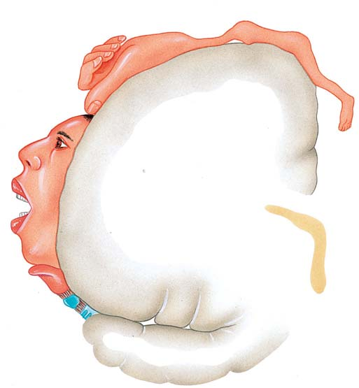
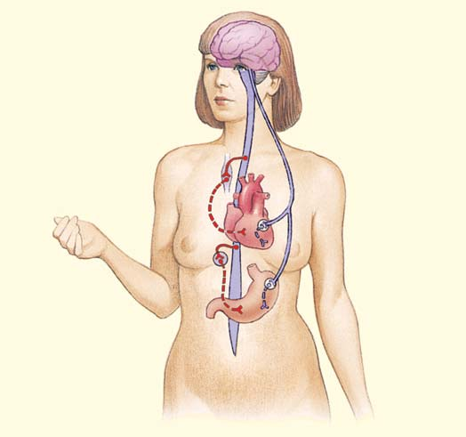

42 Regulación neuronal
882
El encéfalo durante el habla. En esta imagen de resonancia magnética funcional (fMRI por sus siglas en inglés) del encéfalo, el color rojo indica áreas de mayor activación durante el habla; el color amarillo indica activación media.
Volker Steger/Peter Arnold, Inc.
U
na rana agita su lengua a la velocidad del rayo para atrapar una mosca, un conejo escapa de su depredador y usted aprende biología, tal vez no tan rápido. En un sistema nervioso complejo, millones de neuronas trabajan juntas para transmitir información desde el ambiente externo hasta el sistema nervioso central (SNC). Luego que la información es integrada, señales neuronales son transmitidas a los efectores que pueden producir respuestas adecuadas. El sistema nervioso también regula la frecuencia cardiaca, la respiración y cientos de otras actividades internas. Los nervios deben transmitir información desde todos los órganos del cuerpo hacia el SNC. Luego, otros nervios transmiten de regreso la información que permite a los órganos hacer los ajustes necesarios para mantener la homeostasis. Los investigadores se han enfocado bastante en cómo interactúan las neuronas y apenas están empezando a comprender los mecanismos que permiten las muchas funciones vitales del sistema nervioso. Los neurobiólogos usan varios métodos para estudiar los mecanismos de la función neuronal. Por ejemplo, la mejora en los métodos de obtención de imágenes ha revolucionado el estudio del cerebro. Imágenes por resonancia magnética funcional (fMRI por sus siglas en inglés) han proporcionado a los investigadores una ventana a través de la cual observar la función del cerebro. Las imágenes por resonancia magnética funcional permiten a los neurobiólogos estudiar las respuestas de redes neuronales en el cerebro mientras un individuo está realizando una tarea en ese momento, como hablar (vea la fotografía). Durante el desempeño de la tarea, un área del cerebro se vuelve activa y el fl ujo de sangre oxigenada a dicha área se incrementa. La MRI funcional detecta cambios que se llevan a cabo
CONCEPTOS CLAVE
42.1 Las tendencias en la evolución del sistema nervioso de los invertebrados incluyen un mayor número y concentración de neuronas e interneuronas, más contactos sinápticos complejos, especialización de funciones y cefalización. 42.2 El sistema nervioso de los vertebrados consta de un sistema nervioso central (SNC) que incluye al encéfalo y la médula espinal y un sistema nervioso periférico (SNP) que incluye a receptores sensoriales y nervios. 42.3 Aunque regiones diferentes del encéfalo están especializadas en varias clases de vertebrados, el encéfalo se desarrolla de la misma manera y tiene la misma estructura básica; durante la evolución del encéfalo de los vertebrados, el cerebro y el cerebelo se han vuelto más grandes y complejos. 42.4 Igual que en otros vertebrados, el SNC humano recibe información sensorial del ambiente tanto interno como externo, la integra y determina respuestas idóneas. Las áreas de asociación de cerebro son responsables del aprendizaje, la memoria, el lenguaje, el pensamiento y el juicio. 42.5 El sistema nervioso periférico tiene dos divisiones: la división somática transmite información entre el ambiente externo y el SNC, mientras la división autónoma transmite información entre el ambiente interno y el SNC. 42.6 Muchos fármacos prescritos e ilegales afectan el estado de ánimo al modifi car las concentraciones de neurotransmisores en el encéfalo.
Regulación neuronal 883
ticantes) y coordinando los movimientos de sus tentáculos para capturar alimentos. Algunos cnidarios poseen dos o más redes nerviosas. En algunas medusas, una lenta red nerviosa coordina el movimiento de los tentáculos y una segunda red nerviosa, que es más rápida, coordina la natación. El sistema nervioso radial de la estrella de mar y otros equinodermos (vea el capítulo 32) es una red nerviosa modifi cada. Este sistema muestra algún grado de organización selectiva de las neuronas en más que una red difusa. Consta de un anillo de nervios alrededor de la boca, a partir de la cual se extiende un largo nervio radial hacia cada brazo. Las ramas de estos nervios, que forman una red algo semejante al conjunto de nervios de la hidra, coordina el movimiento del animal. Los animales bilateralmente simétricos tienen un sistema nervioso bilateral . En los platelmintos, la región de la cabeza contiene concentraciones de células cerebrales denominadas ganglios cerebrales ( FIGURA
42-2 ). Éstos funcionan como un cerebro primitivo y tienen algún control sobre el resto del sistema nervioso. Por lo común, dos cordones nerviosos sólidos, ventrales y longitudinales se extienden desde los ganglios hasta el extremo posterior del cuerpo. Nervios transversales conectan entre sí los dos cordones nerviosos y el cerebro con las manchas oculares. Esta disposición se denomina sistema nervioso “tipo escalera”. Los anélidos y los artrópodos suelen tener un cordón nervioso ventral sólido ( FIGURA 42-3 ). Los cuerpos de las células de muchas de las neuronas están concentrados en ganglios. Las neuronas aferentes y eferentes están en nervios laterales que unen los ganglios con músculos y otras estructuras del cuerpo. Si a un platelminto se le retira el cerebro, puede moverse casi tan bien como antes. No obstante, cuando choca contra algún obstáculo, persiste en un esfuerzo inútil por continuar hacia delante en lugar de rodear al obstáculo. El platelminto necesita su cerebro para responder adaptándose a cambios en el entorno.
en respuesta a un estímulo muy breve. Por ejemplo, un estímulo visual que dura sólo 30 milisegundos incita una activación del cerebro que puede ser detectada por la fMRI. En este capítulo se comparan varios tipos de sistemas nerviosos. A continuación examinamos la estructura y función del sistema nervioso de los vertebrados, con énfasis en la función del cerebro humano. Exploramos algunas de las fronteras de la neurobiología, como los mecanismos implicados en el procesamiento de la información y la drogadicción.
42.1 SISTEMAS NERVIOSOS DE LOS INVERTEBRADOS: TENDENCIAS EN LA EVOLUCIÓN
OBJETIVOS DE APRENDIZAJE
1 Contrastar sistemas nerviosos radiales y con redes nerviosas con sistemas nerviosos bilaterales. 2 Identifi car tendencias en la evolución del sistema nervioso de los invertebrados.
El estilo de vida de un animal está estrechamente relacionado con la organización y complejidad de su sistema nervioso. Las especies del género Hydra y otros cnidarios tienen una red nerviosa que consta de neuronas interconectadas sin ningún órgano de control central. Las células sensoriales están localizadas en la epidermis y el cnidario puede responder a estímulos provenientes de cualquier dirección (vea el capítulo 31). Cuando una neurona es estimulada, señales eléctricas son enviadas de neurona en neurona en todas las direcciones ( FIGURA 42-1 ). Las respuestas pueden implicar grandes partes del cuerpo. Una ventaja de la red nerviosa es que los cnidarios responden efectivamente a un depredador o presa que se aproxime desde cualquier dirección. La hidra responde al descargar nematocitos (estructuras ur-
Red nerviosa
FIGURA 42-1 Animada Red nerviosa de la hidra La Hydra y otros cnidarios tienen una red de neuronas sin ningún órgano de control central.
Cordones nerviosos
Ganglios cerebrales
Nervios transversales
Manchas oculares
FIGURA 42-2 Animada Sistema nervioso tipo escalera de los platelmintos Los ganglios cerebrales en la región de la cabeza sirven como un cerebro simple. Los cordones nerviosos longitudinales están conectados por nervios transversales.
884 Capítulo 42
bastante y es posible enseñarle tareas difíciles. De hecho, los cefalópodos son considerados los invertebrados más inteligentes. Es posible identifi car las siguientes tendencias en la evolución de los sistemas nerviosos:
- Número incrementado de células nerviosas . 2. Concentración de células nerviosas . Las células nerviosas forman masas de tejido que se vuelven ganglios (acumulación de cuerpos de células) y cerebro , y forman cordones gruesos de tejido que se vuelven cordones nerviosos y nervios . 3. Especialización de funciones . Por ejemplo, la transmisión de impulsos nerviosos en una dirección requiere nervios aferentes , que conducen los impulsos hacia un sistema nervioso central (SNC) y nervios eferentes , que transmiten impulsos del SNC a los efectores (músculos y glándulas). Ciertas partes del SNC se especializan en llevar a cabo funciones específi cas y es posible identifi car distintas regiones estructurales y funcionales. 4. Aumento del número de interneuronas y contactos sinápticos más complejos . Estos contactos permiten mayor integración de mensajes entrantes, proporcionan un mayor intervalo de respuestas y permiten respuestas más precisas. 5. Cefalización o formación de una cabeza . Un animal bilateralmente simétrico en general se mueve hacia delante. La concentración de órganos sensoriales en el extremo frontal del cuerpo permite que el animal detecte un enemigo lo sufi cientemente rápido para escapar, o para ver u oler alimento a tiempo para capturarlo. La respuesta puede ser rápida si los órganos sensoriales están conectados por vías cortas con células nerviosas próximas a cargo de tomar decisiones. En consecuencia, las células nerviosas suelen estar concentradas en la región de la cabeza para formar ganglios o un cerebro.
Repaso
■ ¿Cuáles son las diferencias entre el sistema nervioso de un insecto y el sistema nervioso de una lombriz de tierra?
■ ¿Cuáles son algunas tendencias en la evolución de los sistemas nerviosos?
■ ¿Cuáles son algunas ventajas de la cefalización?
42.2 EL SISTEMA NERVIOSO DE LOS VERTEBRADOS: ESTRUCTURA Y FUNCIÓN
OBJETIVO DE APRENDIZAJE
3 Describir las dos divisiones principales del sistema nervioso de los vertebrados y resumir sus funciones.
El intervalo de posibles respuestas de un animal depende en gran parte del número de neuronas que tiene y de la forma en que están organizadas en el sistema nervioso. Algunos sistemas nerviosos de invertebrados tienen sólo unos cuantos cientos de neuronas. A medida que los grupos animales evolucionaron, los sistemas nerviosos se volvieron cada vez más complejos. El cerebro humano tiene alrededor de 100 miles de millones de neuronas. La manera en que las neuronas están organizadas es fundamental para determinar la habilidad de aprendizaje y la fl exibilidad de comportamiento.
Los ganglios cerebrales de algunos artrópodos difi eren de los de los anélidos en que tienen regiones funcionales específi cas. Estas áreas están especializadas para integrar información transmitida a los ganglios desde órganos sensoriales. Los moluscos con estilos de vida inactivos tienen sistemas nerviosos relativamente simples con poca cefalización y órganos sensoriales muy simples. Por lo regular hay dos cordones nerviosos; uno se extiende a cada lado del cuerpo. A lo largo de los cordones hay varios pares de ganglios. Los moluscos cefalópodos (calamares y pulpos) tienen sistemas nerviosos complejos que incluyen órganos sensoriales bien desarrollados. El sistema nervioso de cefalópodo está adaptado al estilo de vida activo y depredatorio de estos animales. Las neuronas concentradas en ganglios están agrupadas en un anillo que rodea al esófago; conforman un cerebro que contiene alrededor de 168 millones de células nerviosas. Así como el cerebro de vertebrado, el cerebro de cefalópodo tiene lóbulos y pliegues intricados, y áreas particulares están especializadas como centros para funciones específi cas. El pulpo es capaz de aprender
Intestino
Corazón tubular
Cordón nervioso ventral
Faringe Corazones
Vaso sanguíneo dorsal Buche Intestino
Cerebro
Cerebro
Vaso sanguíneo ventral
Cordón nervioso ventral
Ganglios Nervios laterales
Ganglios
Sistema nervioso de una lombriz de tierra. Los anélidos tienen un cerebro anterior dorsal y uno o más cordones nerviosos ventrales. Los cuerpos celulares de las neuronas están localizados en ganglios conectados por el cordón nervioso ventral.
Sistema nervioso de un insecto. El cerebro de artrópodo es continuo con el cordón nervioso ventral. El cerebro está más especializado que en los anélidos.
FIGURA 42-3 Animada Los sistemas nerviosos de anélidos y artrópodos
Regulación neuronal 885
Por razones de conveniencia, el SNP se subdivide en divisiones somática y autónoma. La mayoría de los receptores y nervios implicados con cambios en el ambiente externo son somáticos. Los que regulan el ambiente interno son autónomos. Ambas divisiones tienen nervios aferentes, que transmiten mensajes de los receptores al SNC, y nervios eferentes, que transmiten información de regreso del SNC a las estructuras que responden. La división autónoma tiene dos tipos de vías eferentes: nervios simpáticos y parasimpáticos (que se estudian después en el capítulo).
Repaso
■ ¿Cuáles son los principales componentes del SNC?
■ ¿Cuáles son los componentes y funciones principales del SNP?
El sistema nervioso de los vertebrados tiene dos divisiones principales: el sistema nervioso central ( SNC ) y el sistema nervioso periférico ( SNP ) ( FIGURA 42-4 ). El SNC consta de un encéfalo altamente desarrollado que es continuo con la médula espinal tubular y dorsal. Al servir como control central, estos órganos integran información entrante y determinan respuestas idóneas. El SNP está conformado por receptores sensoriales (por ejemplo, receptores táctiles, auditivos y visuales) y los nervios, que son las líneas de comunicación. Varias partes del cuerpo están relacionadas con el encéfalo por nervios craneales y con la médula espinal por nervios espinales. Las neuronas aferentes (sensoriales) en estos nervios informan continuamente al SNC de condiciones cambiantes. Luego, las neuronas eferentes transmiten las “decisiones” del SNC a músculos y glándulas idóneos, que hacen los ajustes necesarios para mantener la homeostasis.
Nervios eferentes (motores) transmiten señales del SNC a efectores; músculos esqueléticos y glándulas.
Nervios eferentes
Transmiten señales del SNC a efectores; músculo liso, músculo cardiaco, glándulas
Nervios simpáticos Nervios parasimpáticos
Sistema nervioso central (SNC)
Cerebro y médula espinal
División somática División autónoma
I n f
o r
m a
c i ó
n t
r a
n s
m i t i
d a
d e s
d e
e l S
N C
I n f o r
m a c i
ó n t r
a n s
m i t i
d a
h a
c i a
e l
S
N
C
I n
f o
r m
a c
i ó
n t
r a
n s
m i t i
d a
ha c
i a e l
S N
C
Nervios aferentes (sensoriales) transmiten señales de receptores al SNC.
Nervios aferentes (sensoriales) transmiten señales de receptores en órganos internos al SNC.
Receptores Receptores
Sistema nervioso periférico (SNP)
I n f o r
m a c i
ó n t
r a n
s m i
t i d a
d e
s d e
e l
S N
C
FIGURA 42-4 Animada Organización del sistema nervioso de los vertebrados

886 Capítulo 42
y de esta manera ayuda a planear e iniciar la actividad voluntaria. Ciertas regiones del cerebelo almacenan recuerdos implícitos (recuerdos inconscientes para habilidades perceptivas y motoras, como nadar o patinar). El tamaño y la forma del cerebelo varían entre las clases de vertebrados ( FIGURA 42-6 ). El desarrollo del cerebelo está más o menos correlacionado con la cantidad y complejidad de la actividad muscular, refl ejando el principio de que el tamaño relativo de una parte del encéfalo se correlaciona con la importancia del comportamiento de la especie. En algunos peces, aves y mamíferos el cerebro está altamente desarrollado, mientras que tiende a ser pequeño en peces sin mandíbula, anfi bios y reptiles. En las aves y los mamíferos, el cerebelo es grande y tiene muchos pliegues. El daño o eliminación del cerebelo resulta en la alteración de la coordinación muscular. Un pájaro sin cerebelo no puede volar y sus alas se sacuden bruscamente. Cuando el cerebelo humano se lesiona por un golpe o por una enfermedad, los movimientos musculares carecen de coordinación. Cualquier actividad que requiere coordinación delicada, como ensartar una aguja, se vuelve difícil, si no es que imposible de realizar.
42.3 EVOLUCIÓN DEL CEREBRO DE LOS VERTEBRADOS
OBJETIVO DE APRENDIZAJE
4 Seguir el desarrollo de las regiones principales del cerebro de los vertebrados: cerebro anterior, cerebro medio y cerebro posterior, y comparar los cerebros de peces, anfi bios, reptiles, aves y mamíferos.
Todos los vertebrados, desde los peces hasta los mamíferos, tienen la misma estructura cerebral básica, aunque diferentes partes del cerebro están especializadas en las varias clases de vertebrados. La tendencia evolutiva es hacia un incremento en la complejidad, especialmente del cerebro y el cerebelo. En el embrión temprano de un vertebrado, el encéfalo y la médula espinal se diferencian desde un tubo único de tejido, el tubo neural . Anteriormente el tubo se expande y desarrolla en el encéfalo. Después el tubo se convierte en la médula espinal. El encéfalo y la médula espinal permanecen continuos y sus cavidades se comunican. A medida que el encéfalo empieza a diferenciarse, tres protuberancias se hacen visibles: el cerebro anterior, el cerebro medio y el cerebro posterior ( FIGURA 42-5 ).
El cerebro anterior se desarrolla en la médula, la protuberancia anular y el cerebelo
Como se indica en la TABLA 42-1 , el cerebro anterior se subdivide para formar el metencéfalo , que origina el cerebelo y la protuberancia anular , y el mielencéfalo , que origina la médula . La médula, la protuberancia anular y el cerebro medio forman el bulbo raquídeo , la porción alargada del encéfalo que se ve como un tallo que sostiene al cerebro. La médula, la parte más posterior del encéfalo es continua con la médula espinal. Su cavidad, el cuarto ventrículo , es continua con el canal central de la médula espinal y con un canal que corre a través del cerebro medio. Las paredes de la médula son gruesas y están formadas en gran medida por tractos nerviosos (haces de axones) que conectan la médula espinal con varias partes del encéfalo. La médula contiene centros que regulan funciones de mantenimiento de la vida como la respiración, la frecuencia cardiaca y la presión sanguínea. Otros centros refl ejos en la médula regulan actividades como tragar, toser y vomitar. El cerebelo es responsable del tono muscular, la postura y el equilibrio. También refi na y coordina la actividad muscular. En los humanos, el cerebelo proporciona entrada a áreas motoras en la corteza cerebral,
Cerebro posterior
Telencéfalo
Diencéfalo
Mesencéfalo
Metencéfalo
Mielencéfalo
Cerebro medio
Cerebro posterior
FIGURA 42-5 Animada Desarrollo temprano del sistema nervioso de los vertebrados Temprano en el desarrollo del embrión de los vertebrados, el extremo anterior del tubo neural se diferencia en cerebro anterior, el cerebro medio y el cerebro posterior. Éstos se subdividen en divisiones primarias y, fi nalmente, dan lugar a estructuras específi cas del cerebro adulto.
Diferenciación de estructuras del SNC
Primeras divisiones embrionarias Subdivisiones Derivados en adultos Cavidad
Encéfalo
Cerebro posterior Telencéfalo Cerebro Ventrículos laterales (ventrículos primero y segundo)
Diencéfalo Tálamo, hipotálamo, epífi sis (cuerpo pineal) Tercer ventrículo
Cerebro medio Mesencéfalo Lóbulos ópticos en peces y anfi bios; colículos superiores e inferiores en los mamíferos Acueducto cerebral
Cerebro anterior Metencéfalo Cerebelo, protuberancia anular
Mielencéfalo Médula Cuarto ventrículo
Médula espinal Médula espinal Canal central
TABLA 42-1
Regulación neuronal 887
Aunque diferentes partes del cerebro están especializadas en varios grupos de vertebrados, hay una tendencia evolutiva hacia un tamaño más grande y mayor complejidad del cerebro y el cerebelo.
FIGURA 42-6 Animada Evolución del cerebro humano La comparación de los cerebros de miembros de seis clases de vertebrados revela semejanzas básicas y tendencias evolutivas. (Los cerebros no están a escala). Observe que diferentes partes del cerebro están especializadas en los diversos grupos. Los grandes lóbulos olfatorios en el cerebro del tiburón (a) son esenciales para el altamente desarrollado sentido olfativo del depredador. (b-f) En el transcurso de la evolución, el cerebro y el cerebelo se han vuelto más grandes y complejos. En los mamíferos (f) , el cerebro es la parte más prominente del tálamo; la corteza cerebral, la delgada capa externa del cerebro, es bastante elaborada (plegada), lo que aumenta bastante su área superfi cial. En (f) el diencéfalo y parte del bulbo raquídeo están cubiertos por el gran cerebro.
Bulbo olfatorio
Tracto olfatorio
Lóbulo olfatorio
Epífisis
Cuerpo estriado
Lóbulo óptico
Cerebelo
Médula
Bulbo olfatorio
Tracto olfatorio
Epífisis
Cerebro
Diencéfalo
Lóbulo óptico
Cerebelo
Médula
- Tiburón (b) Bacalao
Bulbo olfatorio
Surco
Lóbulo óptico
Epífisis
Cerebelo
Médula
Cerebro
Ave (ganso) (f) Mamífero (caballo)
Anfibio (d) Reptil (cocodrilo)
Convoluciones
PUNTO CLAVE
888 Capítulo 42
una excepción entre los vertebrados en el sentido de que su sentido del olfato suele ser defi ciente. Sin embargo, una parte de su cerebro, el cuerpo estriado , está altamente desarrollado. Esta estructura controla el comer, volar, cantar y otros patrones de acción. En la mayoría de los vertebrados, el cerebro está dividido en hemisferios cerebrales derecho e izquierdo. La mayor parte del cerebro está hecha de materia blanca , que principalmente consta de axones mielinizados que conectan varias partes del cerebro. En los mamíferos y en la mayoría de los reptiles, una capa de materia gris , o corteza cerebral , constituye la porción externa del cerebro. La materia gris no está mielinizada y contiene cuerpos de células y dendritas. Ciertos reptiles y todos los mamíferos tienen un tipo de corteza cerebral denominada neocorteza . La mayor parte de la neocorteza consta de áreas de asociación, regiones que vinculan funciones sensoriales y motoras y son responsables de funciones superiores, como el aprendizaje y el razonamiento. La neocorteza es bastante amplia en los mamíferos y constituye la mayor parte del cerebro. En los humanos, la mayor parte de la corteza cerebral es la neocorteza, que consta de seis capas distintas de células. El resto de la corteza cerebral se denomina paleocorteza . En los mamíferos la paleocorteza forma parte del sistema límbico (que se analiza después en el capítulo). En los mamíferos, el cerebro es la parte más prominente del encéfa lo. Durante el desarrollo embrionario, se expande y crece hacia atrás, cubriendo muchas otras estructuras cerebrales. El área superfi cial de la corteza cerebral humana es ampliada bastante por numerosos pliegues denominados circunvoluciones . Las estrías entre éstas se denominan surcos o hendiduras si son superfi ciales y fi suras si son profundas. El número de circunvoluciones (no el tamaño del cerebro) ha sido asociado con la complejidad de la función del cerebro. En los mamíferos, el cerebro es responsable de numerosas funciones realizadas por otras partes del cerebro en otros vertebrados. Además, el cerebro de los mamíferos tiene funciones de asociación altamente desarrolladas.
Repaso
■ ¿Cuáles son las estructuras derivadas del cerebro posterior embrionario de los vertebrados? ¿Cuáles son las funciones de estas estructuras?
■ ¿Cuál es la diferencia entre el cerebro de un mamífero y el de un anfibio?
42.4 EL SISTEMA NERVIOSO CENTRAL HUMANO
OBJETIVOS DE APRENDIZAJE
5 Describir la estructura y las funciones de la médula espinal humana. 6 Describir la estructura y las funciones del cerebro humano. 7 Resumir el ciclo sueño-vigilia y contrastar el sueño MOR con el sueño no MOR. 8 Describir las acciones del sistema límbico, incluyendo el papel de la amígdala en la expresión emocional. 9 Resumir cómo procesa información el cerebro, incluyendo una descripción de la plasticidad sináptica y los cambios neurológicos que se llevan a cabo durante el aprendizaje.
Los frágiles y suaves cerebro y médula espinal humanos están bien protegidos. Encerrado dentro de huesos, están cubiertos por tres capas de
En los mamíferos, la protuberancia anular contiene un haz grueso de fi bras que transmiten información entre los dos lados del cerebelo. También sirve como puente que une la médula y el cerebelo con otras regiones del cerebro. La protuberancia anular contiene también centros que ayudan a regular la respiración y núcleos que relevan impulsos del cerebro al cerebelo. Recuerde del capítulo 41 que un núcleo es un grupo de cuerpos de células que se mueven dentro del SNC.
El cerebro medio es prominente en peces y anfi bios
En peces y anfi bios, el cerebro medio o mesencéfalo es la parte más prominente del cerebro y sirve como el área de asociación principal. Recibe información sensorial entrante, la integra y envía decisiones a nervios motores idóneos. La porción dorsal del cerebro medio está diferenciada en alguna medida. Por ejemplo, los lóbulos ópticos están especializados para interpretaciones visuales. En reptiles, aves y mamíferos muchas funciones de los lóbulos ópticos son asumidas por el cerebro, que se desarrolla a partir del cerebro posterior. En mamíferos, el cerebro medio consta de los colículos superiores , centros para refl ejos visuales como contracción de la pupila, y los colículos inferiores , centros para ciertos refl ejos auditivos. Los colículos inferiores son centros principales de integración para información auditiva entrante. El cerebro medio de los mamíferos también contiene un centro (el núcleo rojo ) que ayuda a mantener el tono muscular y la postura.
El cerebro posterior origina el tálamo, el hipotálamo y el cerebro
El cerebro anterior , o cerebro posterior , se subdivide para formar el telencéfalo y el diencéfalo . El diencéfalo origina el tálamo y el hipotálamo. En todas las clases de vertebrados, el tálamo es un centro de relevo para mensajes motores y sensoriales. En los mamíferos todos los mensajes sensoriales excepto los provenientes de receptores olfatorios son entregados al tálamo, donde son integrados antes de ser transmitidos a las áreas sensoriales del cerebro. El hipotálamo , que está por debajo del tálamo, forma el piso del tercer ventrículo. El hipotálamo es un centro coordinador fundamental para regular respuestas autónomas y somáticas. Integra información entrante y proporciona entrada a centros en la médula y médula espinal que regulan actividades como la frecuencia cardiaca, la respiración y el funcionamiento del sistema digestivo. En aves y mamíferos, el hipotálamo controla la temperatura del cuerpo. También contiene centros olfatorios, regula el apetito y el balance hídrico, y es importante en respuestas emocionales y sexuales. Como se analiza en el capítulo 49, el hipotálamo vincula los sistemas nervioso y endocrino y produce ciertas hormonas. El telencéfalo origina el cerebro . Los ventrículos laterales (también denominados ventrículos primero y segundo), están dentro del cerebro. Cada ventrículo lateral se conecta con el tercer ventrículo (dentro del diencéfalo) por medio de un canal. En la mayoría de los grupos de vertebrados, el telencéfalo también origina los bulbos olfatorios . Estas estructuras son importantes en el sentido químico del olfato, el sentido dominante en la mayoría de los vertebrados acuáticos y terrestres. De hecho, mucho del desarrollo del cerebro en los vertebrados parece enfocarse en la integración de información olfativa. En peces y anfi bios una gran parte del cerebro está dedicada a estas funciones. Las aves son
Regulación neuronal 889
El espacio entre el aracnoides y la piamadre es el espacio subaracnoideo, que contiene fl uido cerebroespinal (FCE) . Este líquido absorbente de golpes amortigua el cerebro y la médula espinal contra daño mecánico. También sirve como medio para intercambiar nutrientes y productos de desecho entre la sangre y el cerebro. El FCE es producido por redes especiales de capilares, colectivamente conocidos como plexo coroideo , que se extiende desde la piamadre hacia los ventrículos. Después de circular a través de los ventrículos, el FCE pasa hacia el espacio subaracnoideo. Luego es reabsorbido en grandes senos sanguíneos dentro de la duramadre.
La médula espinal transmite impulsos hacia el cerebro y desde éste
La médula espinal tubular se extiende desde la base del cerebro hasta el nivel de la segunda vértebra lumbar. Una sección transversal a través de la médula espinal revela un pequeño canal central rodeado por un área de materia gris en forma algo semejante a la letra H ( FIGURA 42-8 ). La materia gris consta de grandes masas de cuerpos de células, dendritas, axones no mielinizados y células gliales. La materia banca, que se encuentra fuera de la materia gris, consta de axones mielinizados dispuestos en haces denominados tractos o vías . Los tractos ascendentes conducen los impulsos por la médula hasta el cerebro. Por ejemplo, los tractos espinotalámicos en las columnas anterior y lateral de la materia blanca conducen información de dolor y temperatura desde las neuronas sensoriales en la piel. Los tractos piramidales son tractos descendentes que transportan impulsos desde el cerebro hasta nervios motores a varios niveles en la médula. Más tarde en este capítulo se describen los nervios espinales. Además de transmitir impulsos hacia el cerebro y desde éste, la médula espinal controla muchos actos refl ejos. Un acto refl ejo es una respuesta motora relativamente simple a un estímulo. Aunque la mayoría de los actos refl ejos son más complejos, considere un refl ejo de retirada , en el cual un circuito neuronal que consta de tres tipos de neuronas transporta una respuesta a un estímulo ( FIGURA 42-9 ). Suponga que accidentalmente su mano ha tocado una llama. Casi de manera instantánea, e inclusive antes que conscientemente se dé cuenta de lo ocurrido, usted sacude la mano, retirándola. Al instante de contacto entre su mano y la llama, una neurona sensorial transmite un mensaje de receptores de dolor a la médula espinal. Dentro de la médula espinal, una neurona sensorial transmite la señal a una interneurona. La interneurona integra la información y envía una señal a una neurona eferente (motora) idónea, que conduce la información a un grupo de músculos. Los músculos responden contrayéndose,
tejido conectivo: las meninges . Las tres capas meníngeas son la rígida duramadre externa; la aracnoides de enmedio y la delgada y vascular piamadre , que se adhiere estrechamente al tejido del encéfalo y la médula espinal ( FIGURA 42-7 ). La meningitis es una enfermedad en la que estas cubiertas se infectan e infl aman.
Seno dural (seno sagital superior)
Piel del cuero cabelludo Cráneo Duramadre Aracnoides Espacio subaracnoideo Piamadre Corteza cerebral
- Sección frontal a través de la parte superior del cerebro. Observe el seno dural, un seno sanguíneo, entre dos capas de la duramadre. La sangre que sale del cerebro fluye hacia estos senos y luego circula a las grandes venas yugulares en el cuello.
Piel
Cráneo
Espacio subaracnoideo
Piamadre
Plexo coroideo
Tercer ventrículo
Acueducto cerebral
Cuarto ventrículo
Duramadre Plexo coroideo
- Sección sagital a través del cerebro. El fluido cerebroespinal, que amortigua el cerebro y la médula espinal, es producido por los plexos coroideos en las paredes de los ventrículos. Este líquido circula a través de los ventrículos y el espacio subaracnoideo. Es producido de forma continua y luego es reabsorbido hacia la sangre de los senos durales.
FIGURA 42-7 Protección del cerebro y la médula espinal El SNC está bien protegido por el cráneo y las meninges, así como por el fl uido cerebroespinal (FCE).

890 Capítulo 42
M. I. Walker/Photo Researchers, Inc.
Canal central
Materia gris
Fisura dorsal
Materia blanca
Raíz ventral del nervio espinal
2.5 mm
- Sección transversal a través de la médula espinal (b) Micrografía de una sección transversal a través de la médula espinal.
FIGURA 42-8 Animada Estructura de la médula espinal La médula espinal consta de materia gris y materia blanca.
Un acto refl ejo es una respuesta motora coordinada e involuntaria a un estímulo.
Neurona receptora
Neurona sensorial
Músculo
Cuerpo de la célula nerviosa de una neurona sensorial
Sinapsis entre neurona sensorial e interneurona
Interneurona
Cuerpo de la célula nerviosa de una neurona motora
Recepción. El receptor sensorial envía una señal a la neurona sensorial.
Transmisión. La neurona sensorial transmite la señal al SNC.
Integración. La interneurona integra la información.
Transmisión. La neurona motora idónea ( mostrada en rojo ) transmite impulsos al músculo.
Acción por un efector. El músculo se contrae alejando la mano de la flama (respuesta verdadera).
1 2 3 4 5
3 1
2
4
5
FIGURA 42-9 Refl ejo de retirada
PUNTO CLAVE
Regulación neuronal 891
en Estados Unidos) pueden desarrollar por lo menos alguna capacidad limitada para volver a caminar.
La parte más prominente del encéfalo humano es el cerebro
La estructura y las funciones de las partes principales del encéfalo humano se resumen en la TABLA 42-2 , y las regiones más importantes del encéfalo se ilustran en las FIGURAS 42-10 y 42-11 . Así como en otros mamíferos, la corteza cerebral humana consta de hemisferios cerebrales derecho e izquierdo
Áreas específi cas del cerebro están especializadas para llevar a cabo funciones específi cas
La corteza cerebral está dividida funcionalmente en tres áreas: (1) áreas sensoriales , que reciben señales entrantes de los órganos de los sentidos; (2) áreas motoras que controlan los movimientos voluntarios y (3) áreas de asociación , que vinculan las áreas sensorial y motora, y son responsables del pensamiento, el aprendizaje, el lenguaje, la memoria, el juicio, la toma de decisiones y la personalidad. En la FIGURA 42-12 puede
agitando la mano lejos de la llama. En realidad, muchas neuronas en nervios sensoriales, de asociación y motores participan en este acto refl ejo. Por lo general, ni siquiera se está consciente de que todos estos músculos de respuesta existen. En resumen, las señales son transmitidas a través de un refl ejo de retirada en la siguiente secuencia:
recepción por receptores sensoriales en la piel ¡ la neurona
sensorial transmite señales al SNC ¡ la interneurona en el SNC
integra la información ¡ la neurona eferente (motora) transmite la
señal al músculo ¡ el músculo se contrae
Al mismo tiempo que la vía refl eja es activada, un mensaje es enviado por la médula espinal a las áreas conscientes del cerebro. Cuando usted retira su mano de la llama, se percata de lo ocurrido y siente el dolor. Sin embargo, esta toma de conciencia no forma parte del acto refl ejo. La médula espinal posee cierta plasticidad y es capaz de entrenarse. Por ejemplo, la retroalimentación sensorial del ejercicio incrementa la intensidad de las conexiones neuronales en la médula espinal. Cuando las conexiones descendentes con el cerebro están intactas, algunas víctimas de lesiones en la médula espinal (más de 1.2 millones de personas
El cerebro humano
Estructura Descripción Función
Bulbo raquídeo
Médula Continua con la médula espinal, hecha principalmente de nervios que van de la médula espinal al resto del cerebro Contiene centros vitales (grupos de cuerpos celulares de neuronas) que controlan la frecuencia cardiaca, la respiración y la presión sanguínea; contiene centros que controlan el tragar, la tos, el vómito
Protuberncia anular Forma una protuberancia en la superfi cie anterior del bulbo raquídeo Conecta entre sí varias partes del cerebro, contiene centros respiratorios y del sueño
Cerebro medio Justo arriba de la protuberancia anular Centro para refl ejos visuales y auditivos (por ejemplo, refl ejo de pupila, parpadeo, ajustar el oído al volumen del sonido)
Tálamo En la parte superior del bulbo raquídeo Principal centro de relevo sensorial para conducir información entre la médula espinal y el cerebro; las neuronas en el tálamo ordenan e interpretan toda la información sensorial entrante (excepto el olfato) antes de transmitir mensajes a neuronas idóneas en el cerebro.
Hipotálamo Justo por debajo del tálamo; la glándula pituitaria está conectada al hipotálamo por el tallo del tejido neural
Contiene centros para controlar la temperatura del cuerpo, el apetito y el metabolismo de las grasas, regula la glándula pituitaria, es importante en respuestas emocionales y sexuales y en el ciclo sueño-vigilia
Cerebelo Segunda división más grande del cerebro Coordinación muscular y refi namiento de movimientos; tono muscular, postura, equilibrio, ayuda a planear e iniciar actividades voluntarias, guarda recuerdos implícitos
Cerebro La parte más grande y prominente del encéfalo humano; una fi sura longitudinal divide el cerebro en los hemisferios derecho e izquierdo, cada uno dividido en cuatro lóbulos: frontal, parietal, temporal y occipital.
Centro del intelecto, la memoria, la conciencia y el lenguaje; también controla funciones de la sensación y motoras
Corteza cerebral
(materia gris externa)
Dispuesta en circunvoluciones (pliegues) que incrementan el área superfi cial; funcionalmente, la corteza cerebral está dividida en:
Áreas motoras 1. Controla el movimiento de músculos voluntarios
Áreas sensoriales 2. Recibe información entrante de los ojos, oídos, receptores de presión y del tacto, etcétera.
Áreas de asociación 3. Sitios del intelecto, memoria, lenguaje y emoción; interpreta información sensorial entrante
Materia blanca Consta de axones mielinizados de neuronas que conectan varias regiones del cerebro, los axones están dispuestos en haces (tractos)
Conecta lo siguiente:
Neuronas en el mismo hemisferio
Los hemisferios derecho e izquierdo
El cerebro con otras partes del cerebro y la médula espinal
TABLA 42-2
892 Capítulo 42
áreas de asociación en los lóbulos parietales son importantes para ayudarnos a prestar atención a esta información entrante. El tamaño del área motora en el cerebro para cualquier parte del cuerpo es proporcional a la complejidad del movimiento implicado, no a la cantidad de músculo. Es de esperar que las áreas que controlan las manos y la cara sean relativamente grandes ( FIGURA 42-13 en la página 895). Una relación semejante existe entre el área sensorial y la sensibilidad de la región de la piel desde la cual recibe impulsos. Estas relaciones están representadas visualmente en el homúnculo (”persona pequeña”) sensorial y el homúnculo motor en la fi gura 42-13. Las fi bras nerviosas en el cerebro cruzan de modo que un lado del cerebro controla el lado opuesto del cuerpo. Como resultado de otra “inversión”, la parte más alta de la corteza controla las extremidades inferiores del cuerpo. Cuando se grafi can todas las áreas de funciones conocidas, abarcan casi toda la corteza cerebral de la rata, una gran parte de la del perro, una cantidad moderada de la del mono y sólo una pequeña parte de la superfi cie total de la corteza cerebral humana. El resto de las áreas corticales son áreas de asociación. De alguna forma las regiones de asociación integran los diversos impulsos que llegan al cerebro, de modo que se elabora una respuesta idónea. Cuando alguna enfermedad o algún accidente destruyen el funcionamiento de una o más áreas de asociación, es posible perder la capacidad de reconocer ciertos tipos de símbolos. Por ejemplo, podrían olvidarse los nombres de los objetos, aunque sus funciones sean recordadas y comprendidas.
ver exploraciones de tomografía por emisión de positrones (PET por sus siglas en inglés) que muestran algunas áreas funcionales del cerebro. Los investigadores han hecho mapas de la corteza cerebral, localizando las áreas responsables de diversas funciones. Los lóbulos occipitales contienen los centros visuales. La estimulación de estas áreas, inclusive por un golpe en la parte posterior de la cabeza, produce la sensación de luz; su eliminación de los lóbulos ocasiona ceguera. Los centros de la audición están localizados en los lóbulos temporales del cerebro por arriba del oído; la estimulación por un golpe produce la sensación de ruido. La eliminación de ambas áreas auditivas ocasiona sordera. La eliminación de una no produce sordera en un oído; en lugar de eso, produce una disminución en la agudeza auditiva de ambos oídos. Las áreas de asociación en los lóbulos temporales ayudan a identifi car estímulos entrantes. Una ranura denominada surco central cruza la parte superior de cada hemisferio desde el borde medial hasta el gran borde. Esta ranura separa parcialmente los lóbulos frontales de los lóbulos parietales . Los lóbulos frontales tienen áreas motoras y de asociación importantes. La corteza prefrontal es un área de asociación en cada lóbulo frontal que es crucial en la evaluación de información, en la elaboración de juicios y en la toma de decisiones, la planeación y la organización de respuestas. Las áreas motoras en los lóbulos frontales controlan los músculos esqueléticos. El área somatosensorial en la región anterior de los lóbulos parietales recibe información relacionada con el tacto, la presión, el calor, el frío y el dolor de los órganos de los sentidos en la piel. Esta región también recibe información relacionada con la posición del cuerpo. Las
Lóbulo parietal Surco central Lóbulo frontal
Lóbulo occipital
Cerebelo
Área prefrontal
Lóbulo temporal
Tronco encefálico
Médula
Cerebro
Cerebelo Bulbo raquídeo
FIGURA 42-10 Animada El cerebro humano Cerebro humano, vista lateral. Cada hemisferio cerebral está dividido en cuatro lóbulos principales. El diencéfalo y parte del tronco encefálico están cubiertos por el cerebro. Compare el diagrama (a) con la fotografía del cerebro humano (b) .
© Sgame/Dreamstime.
Regulación neuronal 893
cen dopamina , un neurotransmisor que ayuda a balancear la inhibición y excitación de las neuronas implicadas en la función motora. (Consulte el análisis de los neurotransmisores en el capítulo 41). Otras neuronas de la sustancia negra envían señales a los núcleos en el tálamo, que a su vez transmiten la información a la corteza motora. Las neuronas de la sustancia negra que envían señales al tálamo liberan el neurotransmisor ácido gama aminobutírico ( GAMA por sus siglas en inglés). Aún no se comprende por completo de qué manera trabajan juntas estas áreas para coordinar la función motora. Más de medio millón de personas sólo en Estados Unidos están afectadas por la enfermedad de Parkinson, un trastorno neurológico progresivo que afecta el movimiento. En esta enfermedad, las neuronas que producen dopamina mueren con el tiempo, disminuyendo la dopamina disponible. Como resultado, hay una disminución progresiva en los mensajes neuronales efectivos relacionados con respuestas motoras. Esto resulta en temblor en extremidades y rostro, disminución del movimiento, coordinación muscular defi ciente y alteración en el caminar y en el equilibrio. Varios medicamentos, incluyendo un precursor de la dopamina (l-DOPA) se utilizan para tratar los síntomas de la enfermedad.
Los dos hemisferios cerebrales están especializados en ciertas funciones. Como se verá más tarde en este capítulo, el hemisferio izquierdo está especializado en funciones del lenguaje. Esta parte del cerebro también está especializada en la toma de decisiones lógicas y la recuperación de hechos. El hemisferio derecho está especializado en procesamiento emocional y en tareas visuales-espaciales como identifi car rostros.
Los axones en la materia blanca del cerebro conectan partes del encéfalo
La materia blanca del cerebro está por debajo de la corteza cerebral. Las fi bras nerviosas de la materia blanca conectan las áreas corticales entre sí y con otras partes del sistema nervioso (vea la tabla 42-2). Una gran banda de materia blanca, denominada cuerpo calloso , conecta los hemisferios derecho e izquierdo (vea la fi gura 42-11). Muy profundo dentro de la materia blanca del cerebro se encuentran los ganglios basales , grupos apareados de núcleos (materia gris). Estos núcleos desempeñan un papel importante en la coordinación del movimiento. Los ganglios basales envían señales hacia la sustancia negra y las reciben de ella en el cerebro medio. Las neuronas de la sustancia negra que se proyectan (se extienden) hacia los ganglios basales produ-
Cerebro Cuerpo calloso
Cerebelo Protuberancia anular
Médula
Tálamo
Hipotálamo
Diencéfalo
Cerebro
Cuerpo calloso
Glándula pineal
Cerebro medio
Cerebelo
Protuberancia anular
Médula
Médula espinal
Glándula pituitaria
FIGURA 42-11 Sección sagital media a través del cerebro humano El cerebro ha sido cortado a la mitad, dejando al descubierto las estructuras de cubiertas normalmente por el encéfalo. Comparar el diagrama (a) con la fotografía del cerebro humano (b).
Science Pictures Limited/Science Photo Library/Photo Researchers, Inc.
894 Capítulo 42
Área motora suplementaria (sobre la superficie interior, no es visible; programación de movimientos complejos)
Área motora primaria (movimiento voluntario) Área somatosensorial (sensaciones de la superficie del cuerpo y conciencia de la posición del cuerpo)
Área parietal posterior (integración de las entradas somatosensorial y visual, es importante para movimientos complejos)
Área de Wernicke (comprensión del habla)
Área de asociación parietal-temporal-occipital (integración de toda la entrada sensorial, importante en el lenguaje)
Área visual primaria (recibe e interpreta información visual)
SURCO CENTRAL Área premotora (coordinación de movimientos complejos)
Área prefrontal de asociación (planeación de actividad voluntaria, toma de decisiones, rasgos personales)
Área de Broca (controla la habilidad para hablar)
BULBO RAQUÍDEO
MÉDULA ESPINAL
Varias áreas de la corteza cerebral son responsables de tipos específicos de procesamiento neuronal. (Vista lateral del cerebro).
Áreas específicas del cerebro “iluminadas” en una exploración con tomografía por emisión de positrones (PET) a medida que una persona realiza varias tareas. Cuando una región específica del cerebro es más activa, más sangre fluye hacia ella. Las exploraciones PET detectan la magnitud del flujo de sangre. Así, las exploraciones PET son fotografías del cerebro al efectuar tareas específicas. La escala cromática a la derecha indica más actividad progresivamente desde el morado en la parte inferior hasta el blanco en la parte superior, que indica actividad máxima.
CEREBELO
LÓBULO FRONTAL
Área auditiva primaria (recibe e interpreta información auditiva)
Corteza de asociación límbica (principalmente sobre la superficie interior e inferior del lóbulo temporal, motivación y emoción, memoria)
LÓBULO PARIETAL
LÓBULO OCCIPITAL
LÓBULO TEMPORAL
Cortesia de Washington University School of Medicine, St. Louis
FIGURA 42-12 Áreas funcionales del cerebro
El cuerpo sigue un ciclo circadiano de sueño y vigilia
Los investigadores han determinado que muchos animales duermen, inclusive los nematodos y las moscas de la fruta. Los depredadores duermen típicamente por períodos más largos que los animales que suelen ser cazados. Por ejemplo, los conejos duermen unos minutos cada vez. En algunas aves y mamíferos acuáticos, un hemisferio cerebral duerme primero y otro después, permitiendo que el animal permanezca atento a su entorno. Dormir con un hemisferio permite a las focas y las ballenas moverse hacia la superfi cie para respirar sin despertar. Los humanos y muchos otros animales siguen un ritmo circadiano (diario) de 24 horas de sueño y conciencia. Cuando se está despierto, por lo general se está consciente del mundo exterior y de sí mismo, incluyendo los pensamientos, percepciones y emociones. Por el contrario, cuando se está dormido, el cuerpo recibe mensajes del entorno pero no se está consciente de ellos. El núcleo supraquiasmático , el más importante de los relojes biológicos del cuerpo, está localizado en el hipotálamo. El núcleo supraquiasmático recibe información sobre la duración de la luz y la oscuridad desde la retina de los ojos y transmite la información a otros núcleos y neuronas. El núcleo supraquiasmático informa a la glándula pineal acerca de la luz y la oscuridad. La glándula endocrina está ubicada en la línea media del diencéfalo.
Regulación neuronal 895
se viaja en avión a una zona horaria diferente, ocurre porque el cuerpo ya no está sincronizado con su ciclo de luz-oscuridad. Algunas personas toman suplementos de melatonina para promover el sueño, aunque su efi cacia no ha sido demostrada.
La glándula pineal produce melatonina , una hormona que desempeña un papel en la regulación del ciclo sueño-vigilia. La glándula pineal secreta hasta diez veces más melatonina durante la oscuridad que durante la luz del día. El jet lag (desfase de horario), el estado de fatiga y disminución en el desempeño físico y mental que se experimenta cuando
Tobi l l o
M u ñ ec a
Me dio Índ i ce
P ulgar
Cu ell o F re n te
Ca r a
L a b i o s
L engu a
Vista frontal Hemisferio izquierdo Hemisferio derecho
Lóbulo frontal Área motora primaria
Área somatosensorial Lóbulo parietal
Surco central
Lóbulo occipital Vista posterior
Superior
Vista superior
Dedos de los pies
Tronco
Hombro Codo
Mandíbula
Vocalización
S
a
l i
v
a
r
M
a
s t
i c
a r
T r
a g
a r
Vista de sección transversal
Lóbulo temporal
Hemisferio izquierdo
D e do s
Hemisferio izquierdo
Lóbulo temporal
Dedos de los pies
Tronco
Cuello Cabeza
Codo
Hombro Brazo
Dedos
Muñeca
Mano
Meñique
Anular Medio Índice
Pulgar Ojo
Nariz
Cara
Labio superior
Labios
Antebrazo
Pie
Pierna
Cadera
Genitales
Labio inferior
Lengua
Faringe
Órganos intraabdominales
Dientes, encías y mandíbula
Superior
Vista de sección transversal
P árp a do y globo o cul ar
Anular
Meñique
Mano
Rodilla
Homúnculo sensorial. Esta sección transversal a través de la región anterior del lóbulo parietal muestra la distribución de la entrada sensorial al área somatosensorial desde varias partes del cuerpo. El homúnculo está proporcionado para reflejar la cantidad relativa de corteza cerebral que recibe información sensorial desde cada parte del cuerpo.
Homúnculo motor. Esta sección transversal a través de la parte posterior del lóbulo frontal muestra qué área de la corteza cerebral controla cada parte del cuerpo. Observe que una mayor parte de la corteza cerebral está dedicada a controlar aquellas estructuras del cuerpo capaces de realizar movimientos hábiles y complejos. El área motora primaria está presente en el movimiento coordinado de muchos grupos musculares.
Cadera
FIGURA 42-13 Mapas de las áreas sensorial y motora primarias del cerebro

896 Capítulo 42
gistrarse por medio de un aparato denominado electroencefalógrafo . Un registro de esa actividad eléctrica, denominado electroencefalograma (EEG) puede obtenerse al adherir un conjunto de electrodos a regiones normales del cuero cabelludo y medir la actividad de la corteza cerebral ( FIGURA 42-14 ). El EEG muestra que el cerebro está en constante actividad. Ciertos patrones de ondas cerebrales son provocados por tipos específi cos de actividad. Por ejemplo, cuando usted está descansando tranquilamente con los ojos cerrados, su cerebro emite patrones de ritmo alfa . Por el contrario, cuando usted está leyendo este texto de biología, su cerebro emite patrones de ritmo beta , los cuales tienen una frecuencia rápida. Los patrones de ritmo beta son característicos de la actividad mental aumentada, como el procesamiento de información. Durante ciertas etapas del sueño, el cerebro emite ondas teta y ondas delta de alta amplitud. Ciertas condiciones y enfermedades cerebrales modifi can el patrón de las ondas cerebrales. Por ejemplo, las personas con epilepsia muestran un patrón de ondas anormal identifi cable. La localización de un tumor cerebral o el sitio del daño cerebral provocado por un golpe en la cabeza pueden determinarse algunas veces al observar la parte del cerebro que emite ondas anormales.
El sueño avanza a través de varias etapas
El sueño es una alteración de la conciencia durante la cual hay una disminución de la actividad eléctrica en la corteza cerebral y de la cual una persona puede despertar. Con base en cambios en la actividad eléctrica,
El hipotálamo, el tálamo y el bulbo raquídeo participan en regular el ciclo sueño-vigilia. Las neuronas en esta región secretan varios neurotransmisores importantes en la regulación del sueño, incluyendo la acetilcolina, la norepinefrina y la serotonina. El sistema reticular activador (SRA ) es una vía neuronal dentro del bulbo raquídeo y el tálamo. El SRA recibe mensajes de las neuronas en la médula espinal y de muchas otras partes del sistema nervioso, y se comunica con la corteza cerebral por medio de circuitos neuronales complejos. Cuando ciertas neuronas del SRA bombardean la corteza cerebral con estímulos, una persona experimenta alerta y puede enfocarse en pensamientos específi cos. Si el SRA es dañado seriamente, la persona puede entrar en un coma profundo y permanente. Al cabo de muchas horas de actividad, el ciclo sueño-vigilia puede ser afectado por la fatiga del SRA . Luego, los centros del sueño son activados y sus neuronas liberan serotonina. Durante el sueño MOR , una etapa del sueño caracterizada por movimientos oculares rápidos, las neuronas en el SRA estimulan una mayor actividad en ciertas regiones del cerebro. Después de sufi ciente reposo, las neuronas inhibitorias de los centros de sueño se vuelven menos excitables y las neuronas excitatorias del SRA se vuelven más excitables.
Tipos específi cos de actividad están asociados con ciertos patrones de ondas cerebrales
La actividad cerebral puede ser estudiada al medir y registrar los potenciales eléctricos, u “ondas cerebrales”, generadas por miles de neuronas activas en varias partes del cerebro. Esta actividad eléctrica puede re-
Despierto
Despierto
MOR
Ritmos EEG durante diferentes etapas del sueño. Durante el sueño no MOR, etapa IV, el cerebro emite ondas delta, ondas de baja frecuencia y alta amplitud. Durante el sueño MOR, el cerebro emite una actividad de alta amplitud semejante a la de una persona que está despierta.
Patrón de sueño cíclico en un adulto joven.
Sueño MOR Sueño MOR
Sueño no MOR, etapa IV
Sueño no MOR
Despierto, ojos abiertos
Tiempo de sueño (horas)
Etapa de sueño
Onda lenta
0 1 2 3 4 5 6 7
I
II
III
IV
FIGURA 42-14 Ritmos EEG y patrón de sueño cíclico
Regulación neuronal 897
amígdala y el bulbo olfatorio), regiones del tálamo, hipotálamo, varios núcleos en el cerebro medio y las vías neuronales que conectan estas estructuras ( FIGURA 42-15 ). El sistema límbico infl uye en el sistema endocrino y la división autónoma del sistema nervioso. Las emociones son estados de sentimiento que se experimentan fi siológica y cognitivamente. Los humanos nacen con la capacidad de experimentar y expresar emociones, incluyendo miedo, ira, tristeza y felicidad. La amígdala fi ltra información sensorial entrante y la interpretan en el contexto de necesidades emocionales y supervivencia. Cuando percibe peligro, la amígdala envía información a otras partes del cerebro a fi n de que sea posible elaborar respuestas idóneas. Esta parte del sistema límbico es importante en la experiencia de miedo y agresión. La amígdala se vuelve hipersensible al posible peligro que sigue a una experiencia traumática (consulte Preguntas acerca de: La neurobiología de la experiencia traumática ). Las estructuras del sistema límbico son esenciales en la unión de un infante con su cuidador durante el primer año de vida. El desarrollo de un vínculo de apego seguro entre el infante y el cuidador constituye la base de todas las conexiones emocionales y sociales del niño y otros seres humanos. La calidad del apego temprano entre el niño y el cuidador afecta el desarrollo del cerebro y el comportamiento futuro. Un apego saludable permite que el bebé exprese emociones y provee las bases para aprender cómo regular las emociones. El apego también determina cuán vulnerable (o resistente) será la persona a experiencias traumáticas más adelante en su vida. En la década de 1960 los investigadores descubrieron por primera vez que el sistema límbico es parte de un importante sistema motivacional cuando implantaron electrodos en ciertas áreas de los cerebros de animales de laboratorio. Encontraron que una rata puede aprender
es posible identifi car cuatro etapas de sueño no MOR (movimientos oculares no rápidos; MOR es un acrónimo de movimientos oculares rápidos ) durante la primera hora de sueño. Se considera que el sueño más profundo ocurre durante la cuarta etapa, cuando es difícil despertar a la persona dormida. Ondas de menor frecuencia y mayor amplitud (ondas theta y delta) son características del sueño no MOR. Se cree que esta actividad eléctrica es generada de manera simultánea por la corteza cerebral cuando no es activada por impulsos de otras partes del cerebro. Durante el sueño no MOR disminuye el movimiento del cuerpo, la frecuencia cardiaca, la respiración, la presión sanguínea, la tasa metabólica y la temperatura corporal. Aproximadamente cada 90 minutos, una persona dormida entra en la etapa de sueño MOR durante un tiempo. Durante esta etapa (alrededor de 20% del tiempo total de sueño), los ojos se mueven rápidamente bajo los párpados cerrados que se agitan. Las ondas cerebrales cambian a un patrón desincronizado. Todos soñamos, especialmente durante el sueño MOR. Exploraciones PET de personas dormidas indican que durante el sueño MOR el fl ujo de sangre en los lóbulos frontales se reduce. Por el contrario, el fl ujo de sangre aumenta en áreas del sistema límbico que producen escenas visuales y emociones. Durante el sueño MOR aumentan el movimiento del cuerpo, la frecuencia cardiaca, la respiración, la presión sanguínea, la tasa metabólica y la temperatura corporal. Un incremento de secreción del neurotransmisor GABA por ciertas neuronas en el cerebro y la médula espinal inhibe la contracción muscular en algunos grandes grupos de músculos. Esto resulta en un tipo de parálisis temporal.
El sueño puede tener varias funciones
Aunque las aves, los mamíferos y muchos otros animales tienen un ciclo sueño-vigilia, los neurobiólogos no están seguros de por qué es necesario el sueño. Una hipótesis sostiene que los recuerdos son consolidados durante el sueño MOR. Otra hipótesis sugiere que el sueño permite que conexiones sinápticas menos importantes establecidas durante el día se reestablezcan. El sueño no MOR puede proporcionar tiempo para que el cerebro se restaure a sí mismo. Cuando una persona permanece despierta por períodos extraordinariamente largos, resulta en fatiga e irritabilidad, e inclusive tareas rutinarias no se realizan bien. Por ejemplo, la fatiga es una causa principal de accidentes automovilísticos. El sueño también proporciona la oportunidad de conservar energía y restituir las reservas de glucógeno.
El sistema límbico afecta aspectos emocionales del comportamiento
El sistema límbico , presente en todos los mamíferos, infl uye en los aspectos emocionales del comportamiento, evalúa recompensas y es importante en la motivación. Desempeña un papel en la conducta sexual, los ritmos biológicos y las respuestas autónomas. El sistema límbico incluye regiones del cerebro (partes de la corteza prefrontal, la corteza cingulada, el lóbulo temporal, los ganglios basales, el hipocampo, la
Corteza cingulada
Fórnix
Tálamo
Hipocampo
Amígdala
Lóbulo temporal
Hipotálamo Bulbos olfatorios
Lóbulo frontal
FIGURA 42-15 El sistema límbico El sistema límbico consta de un anillo de estructuras del cerebro posterior que rodean el bulbo raquídeo y están interconectadas por vías neuronales complejas. Este sistema incluye la amígdala, el hipocampo, partes de la corteza prefrontal, la corteza cingulada y áreas en el tálamo e hipotálamo. El sistema límbico es importante para evaluar amenazas, en la expresión emocional, conducta sexual, motivación y aprendizaje.
898 Capítulo 42
¿Alguna vez ha estado implicado en un accidente automovilístico grave o ha sido víctima de algún delito violento? ¿Es un veterano de combate en alguna guerra? Tal vez es sobreviviente de algún desastre, como un huracán o un terremoto. O bien, pudo haber sufrido abuso o rechazo infantil. Si usted es sobreviviente de alguna de estas experiencias o de algunos otros acontecimientos aterradores, tal vez haya experimentado la experiencia de un trauma. Una experiencia traumática es un acontecimiento que produce miedo intenso, impotencia u horror y que supera los mecanismos normales de adaptación y defensa. La mayoría de las personas cuentan con estrategias para procesar experiencias moderadamente inquietantes. Por ejemplo, si usted está implicado en un accidente automovilístico menor, o es uno de los millones de personas que ven por televisión cómo personas han sido heridas en Irak o sacadas de los escombros de edifi cios después de los terremotos en Chile o Haití, es posible que haya sido afectado por los eventos que ha experimentado o presenciado. Tal vez haya procesado lo que vio y escuchó al pensar al respecto y hablar con sus amigos y familiares sobre lo ocurrido. Quizá haya soñado acerca de su experiencia. A medida que el cerebro revisa activamente y ordena una experiencia inquietante, se le da sentido a lo que ha ocurrido. La intensidad emocional disminuye y se almacena el recuerdo junto con otros recuerdos de acontecimientos pasados más comunes. La importancia e intensidad del recuerdo de una experiencia incómoda se desvanecen. Los acontecimientos traumáticos son más difíciles de procesar. Si usted sobrevivió a una experiencia en la que pensaba que iba a morir o salir lastimado seriamente, o si presenció que alguien fue herido o muerto, su respuesta corporal al peligro real o percibido puede ser muy intensa. Años después, su cerebro podría seguir secretando cantidades anormalmente elevadas de hormonas del estrés y ciertos neurotransmisores, y usted puede permanecer en alerta roja, con su cuerpo listo para hacer frente a cualquier amenaza nueva. ¿Cómo responde el cerebro en una experiencia traumática y cómo la experiencia afecta al cerebro? Cuando hay una amenaza de peligro, la amígdala envía mensajes al hipotálamo (que envía señales a la división autónoma del sistema nervioso y el sistema endocrino) y a la neocorteza (que permite estar alerta de la experiencia). La amígdala está programada para recordar los olores, los sonidos y las sensaciones que forman parte de la experiencia. Hasta que los recuerdos de la experiencia han sido procesados por completo, olores, sonidos y sensaciones semejantes hacen rememorar el acontecimiento traumático y activan al cuerpo para estar
preparado para el peligro. La persona traumatizada experimenta miedo y ansiedad. Debido a que los recuerdos son experiencias traumáticas abrumadoras, son muy difíciles de procesar. Provocan tanta incomodidad y ansiedad que se tiende a evitarlos, en lugar de enfocarse intencionalmente en ellos y ordenarlos. Como resultado, los recuerdos traumáticos parecen permanecer “pegados” en el sistema límbico. Cuando se activa, la experiencia puede repetirse con su intensidad emocional original (como una escena en retrospectiva). Algunos sobrevivientes de traumas desarrollan el trastorno de estrés postraumático (TEPT), una condición en la que experimentan (1) pensamientos invasores, imágenes, experiencias sensoriales, recuerdos y sueños; (2) un deseo de evitar el acontecimiento traumático y (3) hiperexcitación fi siológica, una condición en la que el cuerpo permanece en estado de alerta máxima, explorando de manera continua el entorno para detectar un peligro potencial. Varios estudios han demostrado una asociación entre traumas prolongados (por ejemplo, abuso infantil severo) y cambios a largo plazo en el cerebro. Estos cambios incluyen anormalidades en EEG, menor tamaño de ciertas áreas del cerebro, desarrollo comprometido del hemisferio derecho del cerebro (el hemisferio derecho está especializado en procesar información relacionada con la emoción, la interacción social y los estados fi siológicos); diferencias en los circuitos neuronales que conectan áreas corticales y subcorticales (pueden disminuir el sentido de sí misma de la persona y conducir a relaciones defi cientes con otras personas); concentraciones anormales de ciertos neurotransmisores (que afectan el estado de ánimo, la capacidad para inhibir un comportamiento inapropiado); modulación inadecuada del sistema límbico (sus respuestas son exageradas); y cambios a largo plazo en el sistema nervioso simpático y respuesta endocrina al estrés (más rápida e intensa). Estudios de neuroimagenología han demostrado cambios en la función cerebral, incluyendo una respuesta exagerada de la amígdala y una respuesta disminuida de la corteza prefrontal media (que normalmente inhibe la amígdala). Cuando la amígdala responde en exceso, el individuo experimenta ansiedad, angustia e hiperexcitación. Estos estados fi siológicos pueden conducir a respuestas emocionales intensas que tienen su raíz en la experiencia traumática. El área de Broca, una región en la parte posterior de la corteza frontal izquierda, también es afectada por los traumas. El área de Broca es críticamente importante en la generación de palabras y por tanto en la expresión del lenguaje (vea la fi gura 42-12). Los
investigadores han demostrado que cuando los sujetos son conminados a explicar sus experiencias traumáticas, la actividad en el área de Broca disminuye. Esta desactivación parece ser la base fi siológica de la difi cultad que los sobrevivientes de traumas tienen para verbalizar su experiencia. Los sobrevivientes de traumas han descrito un estado de “terror sin palabras” que experimentan en retrospectiva de las experiencias traumáticas. Sin palabras, es difícil procesar y resolver una experiencia traumática. Con base en muchos estudios, resulta evidente que las experiencias traumáticas pueden provocar cambios estructurales y funcionales en el cerebro. Las respuestas exageradas de la amígdala a estímulos inofensivos percibidos como amenazas están disociadas de la activación cortical (prefrontal media). Las respuestas generadas en el sistema límbico están arraigadas en la emoción, en lugar de estarlo en el raciocinio y el juicio (vea la fi gura a continuación). La experiencia del trastorno de estrés postraumático puede afectar severamente y limitar la vida de una persona. No obstante, este trastorno puede resolverse por medio de un tratamiento adecuado.
Preguntas acerca de
LA NEUROBIOLOGÍA DE LA EXPERIENCIA TRAUMÁTICA
Recordatorio de la experiencia traumática (desencadenamiento)
El sistema límbico (incluyendo la amígdala) responde en forma exagerada
Respuestas fisiológicas arraigadas en la experiencia traumática
Angustia, ansiedad Hiperexcitación fisiológica
Hipotálamo
Baja respuesta por la corteza prefrontal medial (que normalmente inhibe el sistema límbico)
No inhibe el sistema límbico
Algunas respuestas del sistema límbico a recordatorios de experiencias traumáticas
Regulación neuronal 899
nadiense Donald O. Hebb propuso en 1949 que cuando dos neuronas conectadas por una sinapsis; es decir, neuronas presináptica y postsináptica, están activas simultáneamente, la sinapsis se refuerza. En 1973, los investigadores británicos T. V. P. Bliss y T. J. Lomo encontraron evidencia experimental para la hipótesis de Hebb. Al investigar cerebros de conejos, estos científi cos aplicaron una serie de estímulos eléctricos de alta frecuencia a neuronas en el hipocampo, una región que ayuda a convertir la información en recuerdos. El resultado fue un incremento a largo plazo en la intensidad sináptica. También se da crédito a Hebb por el axioma: “Las neuronas que se disparan juntas, se conectan juntas”. La experiencia infl uencia la manera en que los circuitos neuronales en el cerebro se organizan a sí mismos.
El aprendizaje implica el almacenamiento de información y su recuperación
La memoria implícita , también denominada memoria procedimental , es memoria inconsciente para habilidades perceptuales y motoras, como andar en bicicleta. La memoria implícita es sobre “cómo” hacer algo e implica repetir el comportamiento hasta que se vuelve rutinario. La memoria declarativa , también denominada memoria explícita , implica el conocimiento factual de gente, sitios u objetos y requiere un recuerdo consciente de la información. El hipocampo es crítico en la formación y recuperación de memorias declarativas. ¿Cuánto tiempo se recuerda? Usted está bombardeado constantemente con miles de bits de información sensorial. En este mismo instante, sus ojos están recibiendo información sobre las palabras en esta página, los objetos que le rodean y la intensidad de la luz en la habitación. Al mismo tiempo, puede estar escuchando una variedad de sonidos: música, sus amigos conversando en la habitación contigua, el zumbido de un acondicionador de aire. Su epitelio olfatorio puede percibir agua de colonia u oler café. Tal vez usted está comiendo mientras lee. Los receptores sensoriales en sus manos pueden estar recibiendo información relacionada con el peso y la posición de su libro. Es posible mantener esta información sensorial en la memoria inmediata durante fracciones de segundo. La mayoría de los estímulos sensoriales no tienen la importancia para recordarlos más y son fi ltrados. La memoria de corto plazo dura sólo unos segundos o algunos minutos. Por lo regular es posible preservar sólo alrededor de siete fragmentos de información (por ejemplo, siete palabras o números) a la vez en la memoria a corto plazo. La memoria a corto plazo permite recordar información durante unos minutos. Por ejemplo, cuando se busca un número telefónico, se suele recordarlo el tiempo sufi ciente para marcarlo. Si se necesita la misma información una hora después, la mayoría de las personas debe buscar de nuevo. Cuando se selecciona información para la memoria de largo plazo , es necesario procesarla. El cerebro revisa el material y lo codifi ca . Se reconocen patrones y de manera signifi cativa se asocian los estímulos con experiencia o conocimientos pasados. El hipocampo funciona en la formación y recuperación de recuerdos. También retiene temporalmente nueva información y puede integrar varios aspectos de una experiencia, incluyendo aromas, sonidos y otra información. Ayuda a colocar las experiencias en categorías, de modo que puedan almacenarse con facilidad junto con recuerdos semejantes. Se integra nueva información con otros conocimientos ya almacenados en el cerebro. La consolidación de la memoria permite que los recuerdos sean transferidos a la corteza cerebral y almacenados durante largos períodos. La consolidación implica la expresión de genes y síntesis de proteínas, y depende de nuevas conexiones neuronales en las sinapsis. Para que el cerebro consolide una nueva memoria se requiere tiempo (varios minutos, horas o incluso más).
rápidamente a oprimir una palanca que estimula centros de recompensa en el cerebro. De hecho, la rata oprimirá la palanca hasta 5000 veces por hora, eligiendo esta autoestimulación por agua y comida, hasta que queda exhausta. Ahora se sabe que el cerebro tiene centros de recompensa que proporcionan placer cuando se llevan a cabo actividades vitales como comer, beber y tener actividad sexual. Estos centros son importantes en la experimentación de emociones y la motivación. Cuando son estimulados, activan circuitos de recompensa que permiten sentir placer en respuesta a ciertas experiencias. La ruta de dopamina mesolímbica , un circuito de recompensa primordial, incluye dos áreas importantes del cerebro medio, la sustancia negra y el área tegmental ventral adyacente. Estas áreas, que se extienden hacia centros de control del comportamiento en el sistema límbico, contienen al grupo más numeroso de neuronas en el cerebro que liberan dopamina. Nuevos estímulos asociados con recompensa o placer activan estas neuronas de dopamina. Las neuronas envían señales de información sobre acontecimientos o estímulos sorpresivos que pronostican recompensas. Tales señales podrían motivar el actuar cuando algo importante está ocurriendo. Las vías de dopamina también son importantes en la neurobiología de la adicción a las drogas (que se analizan después en este capítulo). A medida que los investigadores continúen descifrando los mecanismos de las vías de dopamina se podrán comprender mejor trastornos como el défi cit de atención e hiperactividad (TDAH) y la esquizofrenia, condiciones asociadas con cantidades excesivas de dopamina y otros neurotransmisores en el cerebro. Las personas con estos trastornos tienen difi cultad para fi ltrar los estímulos sensoriales. La presencia de dopamina en exceso puede llevarlas a desviar su atención a tantos estímulos sensoriales que tienen difi cultad para enfocarse en los más importantes.
El aprendizaje y la memoria implican cambios a largo plazo en las sinapsis
Los neurobiólogos están empezando a comprender cómo funciona el sistema nervioso, incluso cómo se aprende y se recuerda. El aprendizaje es el proceso por el cual se adquieren conocimientos o habilidades como resultado de la experiencia. Para que ocurra el aprendizaje, se debe ser capaz de recordar lo que se experimenta. La memoria es el proceso de codifi car, almacenar y recuperar información o habilidades adquiridas. Una pregunta interesante ha sido: ¿en qué medida las funciones del cerebro están cableadas; es decir, preestablecidas? Muchas áreas del cerebro que alguna vez se pensó estaban cableadas ahora se sabe que son fl exibles y capaces de cambiar. Inclusive los animales con sistemas nerviosos muy simples pueden aprender a repetir comportamientos asociados con la recompensa y a evitar los que producen dolor. Estos cambios de comportamiento son posibles debido a la plasticidad sináptica , la habilidad de las conexiones sinápticas para cambiar en respuesta a la experiencia. Este cambio implica estructura y función. Algunos ejemplos conocidos de plasticidad en habilidades motoras humanas incluyen la habilidad para caminar, andar en bicicleta o atrapar una pelota de beisbol. Al principio, usted probablemente era torpe, pero con la práctica su desempeño se volvió más suave y preciso. Para que ello ocurriese debe haber habido cambios en las sinapsis en los circuitos neuronales. De manera semejante, la habilidad de aprender idiomas, resolver problemas y realizar experimentos científi cos depende de la plasticidad sináptica. ¿Cuáles son los mecanismos por los cuales se aprenden diversas actividades, como movimientos habilidosos y biología? El psicólogo ca-
900 Capítulo 42
La inducción de PLP y DLP requiere la activación de dos tipos de receptores de glutamato: receptores de NMDA y receptores de AMPA . (Cada uno de estos receptores se denomina así por el compuesto que los activa artifi cialmente. NMDA es el acrónimo de N-metil-D-aspartato y AMPA signifi ca α-amino-3-hidroxil-5-metil-4-isoxazol-propionato.) Los receptores de NMDA y AMPA están presentes en las membranas plasmáticas de neuronas postsinápticas. Ellas controlan el paso de iones calcio dentro de las neuronas. Los receptores de NMDA responden al neurotransmisor glutamato al abrir canales de Ca 2+ . Sin embargo, cuando la neurona postsináptica está en su potencial de reposo, los canales iónicos de NMDA están bloqueados por Mg 2+ . Un modelo para el mecanismo de PLP se ilustra en la FIGURA 42-16 . Una neurona presináptica libera glutamato, que se une con los receptores de AMPA. La neurona postsináptica se despolariza. Si la despolarización de la neurona postsináptica es sufi cientemente fuerte, el Mg 2+ se aleja de los receptores de NMDA, desbloqueándolos. Luego, el glutamato puede unirse con estos receptores, abriendo los canales de Ca 2+ y dejando que el Ca 2+ se mueva hacia la célula. Parece que los iones calcio son un disparador importante de la PLP. Los iones calcio actúan como segundos mensajeros que inician cambios a largo plazo que fi nalmente son responsables de la PLP. Por ejemplo, los iones calcio activan una vía de segundo mensajero dependiente del Ca 2+ que resulta en la inserción de más receptores de AMPA en la membrana postsináptica. Esto es importante porque los receptores de AMPA adicionales incrementan la sensibilidad al glutamato. Se producen más PPSE (potenciales excitatorios postsinápticos), lo que refuerza la sinapsis (es decir, ayuda a mantener la PLP). Recuerde del capítulo 41 que un PPSE es un cambio en el potencial de membrana que acerca la neurona al nivel de umbral. Los iones calcio también activan una vía que conduce a liberar una señal retrógrada que se mueve hacia atrás, de la neurona postsináptica a la neurona presináptica. El gas soluble óxido nítrico ( NO ) ha sido identifi cado como la señal retrógrada. Esta señal mejora la liberación del neurotransmisor por la neurona presináptica. Observe que éste es un bucle de retroalimentación positiva que fortalece la conexión entre las dos neuronas.
La memoria a largo plazo implica expresión de genes
La expresión de genes y la síntesis de proteínas se llevan a cabo durante el proceso de establecimiento de la memoria a largo plazo. Este proceso implica cambios más lentos pero de más largo plazo en las conexiones sinápticas. La memoria a largo plazo depende de los receptores activados unidos a proteínas G (vea el capítulo 6). El AMP cíclico actúa como segundo mensajero. Un alto nivel de ATP cíclico activa una proteína quinasa que penetra en el núcleo, conduciendo a la activación de genes y síntesis de proteínas. En este proceso, la proteína quinasa fosforiliza un factor de transcripción conocido como CREB (por cyclic AMP response element binding protein ). Luego, la CREB enciende el proceso de transcripción de ciertos genes. Se ha demostrado que la CREB es una molécula de señalización en la vía de la memoria de muchos animales, incluyendo moscas de la fruta y ratones. Las moléculas y procesos implicados en el aprendizaje y la memoria se han conservado bastante durante la evolución.
La experiencia afecta el desarrollo y el aprendizaje
Muchos estudios han demostrado la plasticidad sináptica en ratas, ratones y otros animales de laboratorio expuestos a ambientes enriquecidos. Al contrario de las ratas alojadas en jaulas normales y a las que se les satisfacen las necesidades básicas, a aquellas expuestas a entornos enri-
Si una persona sufre una conmoción cerebral, la memoria de lo que ocurrió inmediatamente antes del incidente puede perderse por completo. Esto se conoce como amnesia retrógrada . Cuando el hipocampo es dañado, la memoria a largo plazo puede no ser deteriorada y el paciente puede ser capaz de recordar información almacenada en el pasado. No obstante, nuevos recuerdos a corto plazo ya no pueden convertirse en recuerdos a largo plazo. ¿Dónde se almacenan los recuerdos? Cuando grandes áreas de la corteza cerebral de los mamíferos son destruidas, la información se pierde de alguna manera en proporción con la cantidad de tejido arruinado. Ninguna área específi ca puede identifi carse como el “banco de la memoria”. En lugar de ello, parece que los recuerdos están almacenados dentro de muchas áreas del cerebro. Por ejemplo, los recuerdos visuales pueden estar almacenados en los centros visuales de los lóbulos occipitales y los recuerdos auditivos pueden estar almacenados en los lóbulos temporales. Los investigadores creen que los recuerdos están integrados en muchas áreas del cerebro, incluyendo áreas de asociación de la corteza cerebral, la amígdala, el hipocampo, el tálamo y el hipotálamo. El área de Wernicke en el lóbulo temporal ha sido identifi cada como un área de asociación importante para procesos complejos del pensamiento. Las neuronas dentro de las áreas de asociación forman vías interconectadas que permiten la transferencia de información complicada. La recuperación de la información almacenada en la memoria a largo plazo reviste un interés considerable: ¡especialmente para los estudiantes! El desafío consiste en encontrar información cuando se le requiere. Cuando parece que ha olvidado algo, el problema puede ser que no ha buscado de manera efectiva el recuerdo. La recuperación de información puede mejorarse por medio de una codifi cación cuidadosa; por ejemplo, al formar asociaciones intensas entre los temas. Por otra parte, los recuerdos poco importantes que no se usan suelen olvidarse con el tiempo. El olvido puede ser útil cuando limpia el cerebro de información innecesaria.
Durante el aprendizaje ocurren cambios neurológicos
La memoria a corto plazo implica cambios en los receptores de neurotransmisores de las neuronas postsinápticas. Estos cambios refuerzan las conexiones sinápticas. Los receptores están vinculados por segundos mensajeros (por ejemplo, AMP cíclico) con canales iónicos en la membrana plasmática. En algunos tipos de aprendizaje los cambios se llevan a cabo en terminales presinápticas o neuronas postsinápticas que permanentemente mejoran o inhiben la transmisión de impulsos. En algunos casos, neuronas específi cas pueden volverse más sensibles a un neurotransmisor específi co. Las neuronas suelen transmitir potenciales de acción en estallidos y la cantidad de un neurotransmisor liberado por cada potencial de acción puede aumentar o disminuir. La estimulación eléctrica repetida de neuronas provoca un cambio funcional en la sinapsis. Cuando una neurona presináptica continúa transmitiendo potenciales de acción a un ritmo elevado durante un minuto o más, hay un reforzamiento a largo plazo de la conexión entre las neuronas presináptica y postsináptica. Esta intensidad incrementada de la conexión sináptica se conoce como potenciación de largo plazo (PLP) . Potenciar signifi ca “reforzar o hacer más potente”. En contraste, la estimulación de neuronas a baja frecuencia resulta en una disminución a largo plazo en la intensidad de sus conexiones sinápticas. Esta disminución se denomina depresión de largo plazo (DLP) que no está relacionada con el trastorno del estado de ánimo. El almacenamiento y olvido de información depende de la intensifi cación y debilitamiento de las conexiones sinápticas causadas por la PLP y la DLP.
Regulación neuronal 901
bién han demostrado que la estimulación ambiental es necesaria para mantener la condición de la corteza cerebral más adelante en la vida.
El lenguaje implica comprensión y expresión
El lenguaje es una forma de comunicación en la que se usan palabras para simbolizar objetos y expresar ideas. En alrededor de 97% de los humanos, incluyendo a la mayoría de los zurdos, las áreas del cerebro responsables del lenguaje están localizadas en el hemisferio izquierdo (vea la fi gura 42-12). El área de Wernicke , ubicada en el lóbulo temporal, es un centro importante para la comprensión del lenguaje. Esta área ayuda a reconocer e interpretar palabras habladas y escritas. El área de Wernicke también ayuda a formular la elección y secuencia de palabras, y transferir información al área de Broca . Ubicada cerca de áreas motoras en el lóbulo frontal, el área de Broca controla la habilidad para hablar. El área de Broca también es importante en el procesamiento del lenguaje y la comprensión del habla.
Repaso
■ ¿Cómo está protegido el SNC humano? ¿Cuál es la función del fl uido cefalorraquídeo?
■ ¿Cuáles son las dos funciones principales de la médula espinal de los vertebrados?
■ ¿Cuáles son las funciones de cada uno de los lóbulos principales del cerebro?
■ ¿Qué papel desempeña el sistema límbico en los aspectos emocionales del comportamiento?
■ ¿Qué papel desempeña la plasticidad sináptica en el procesamiento de información?
quecidos se les proporcionan juguetes y otros objetos estimulantes, así como la oportunidad de interactuar socialmente con otras ratas. Los animales criados en un entorno enriquecido muestran contactos sinápticos y procesos incrementados, y recuerdan información más rápido que los animales que carecen de tales ventajas. Los ratones expuestos a entornos enriquecidos desarrollan un número de neuronas signifi cativamente mayor en el hipocampo y aprenden laberintos más rápido que los animales control. La estimulación ambiental temprana también puede mejorar el desarrollo de áreas motoras en el cerebro. Por ejemplo, los cerebros de ratas alentadas a hacer ejercicio se vuelven ligeramente más pesadas que los de animales control. Dentro del cerebelo ocurren cambios característicos, incluido el desarrollo de dendritas más grandes. Aparentemente, durante la vida temprana ocurren ciertos períodos críticos o sensibles del desarrollo del sistema nervioso que son afectados por estímulos ambientales. Por ejemplo, cuando los ojos de ratones jóvenes se abren por primera vez, las neuronas en la corteza visual desarrollan un gran número de espinas dendríticas (estructuras sobre las que se lleva a cabo el contacto sináptico). Si los animales se mantienen en la oscuridad y se les priva de estímulos visuales, se forman menos espinas dendríticas. Si los ratones son expuestos a luz más tarde en su vida, se forman algunas nuevas espinas dendríticas pero nunca tantas como las que se desarrollan en ratones criados en un entorno normal. Estudios que vinculan el desarrollo del cerebro humano con experiencia ambiental han demostrado que la estimulación temprana es importante para el desarrollo sensorial, motor, intelectual y social del niño. Tales estudios sostienen la importancia de la paternidad informada, así como de programas de educación tempranos. Los investigadores tam-
Cuando el glutamato se une con receptores de NMDA, el Ca 2+ penetra en la neurona postsináptica y activa sistemas de señalización intracelular que conducen a cambios responsables de la PLP.
Los canales iónicos se abren, permitiendo el paso de Na + hacia la neurona postsináptica. El Na + despolariza la membrana.
El Ca 2+ ocasiona que más receptores de NMDA se inserten en la membrana.
1 La neurona presináptica estimulada libera glutamato.
2 El glutamato se une con receptores de AMPA en la neurona postsináptica.
Activación de receptores de AMPA. El glutamato liberado por una neurona presináptica se une con receptores de AMPA sobre la neurona postsináptica. Observe que los receptores de NMDA están bloqueados por Mg 2 + .
Activación de receptores de NMDA. La combinación de fuerte estimulación y la unión del glutamato activan los receptores NMDA.
Potenciación de largo plazo. Los iones calcio activan vías, conduciendo a cambios que finalmente son responsables de la PLP.
3
4
Si la neurona postsináptica está bastante despolarizada, el Mg 2+ se aleja de los receptores de NMDA, permitiendo que el glutamato se les una. 5
Canales de Ca 2+ abiertos
6
7 El Ca 2+ estimula la liberación de NO, que se difunde hacia la neurona presináptica y estimula la liberación de más glutamato.
Neurona presináptica
Neurona postsináptica Receptor de NMDA bloqueado por Mg 2 +
Receptor de AMPA
Glutamato
Mg 2 +
Vía de señalización
NO
Mg 2 +
Ca 2 + Ca 2 + Na +
Señal retrógrada
Glutamato
Neurona presináptica Neurona presináptica
FIGURA 42-16 Un modelo propuesto para el mecanismo de potenciación de largo plazo (PLP)
PUNTO CLAVE
902 Capítulo 42
La porción eferente de la división autónoma está subdividida en los sistemas simpático y parasimpático ( TABLA 42-3 ). Muchos órganos están inervados por ambos tipos de nervios. En general, los sistemas simpático y parasimpático tienen efectos opuestos ( FIGURAS 42-17 y 42-18 ). Por ejemplo, la frecuencia cardiaca es acelerada por mensajes de fi bras nerviosas simpáticas y es retardado por impulsos de sus fi bras nerviosas parasimpáticas. En muchos casos los nervios simpáticos operan para estimular órganos y movilizar energía, especialmente en respuesta al estrés; mientras que los nervios parasimpáticos infl uencian órganos para conservar y restaurar energía, en particular durante actividades apacibles y calmadas. En lugar de usar una sola neurona eferente, como en el sistema somático, el sistema autónomo usa un relevador de dos neuronas entre el SNC y el efector. La primera neurona, denominada neurona preganglionar , tiene un cuerpo de célula y dendritas dentro del SNC. Su axón, parte de un nervio periférico, termina por establecer sinapsis con una neurona postganglionar . Las dendritas y el cuerpo de la célula de la neurona postganglionar están en un ganglio fuera del SNC. Su axón termina cerca del efector o en éste. Los ganglios simpáticos están apareados y una cadena de ellos, la cadena paravertebral de ganglios simpáticos , van a cada lado de la médula espinal desde el cuello hasta el abdomen. Algunas neuronas preganglionares simpáticas no terminan en estos ganglios, sino que pasan y se dirigen a los ganglios colaterales en el abdomen, cerca de la aorta y sus ramifi caciones principales. Las neuronas preganglionares parasimpáticas
42.5 EL SISTEMA NERVIOSO PERIFÉRICO
OBJETIVOS DE APRENDIZAJE
10 Describir la organización del sistema nervioso periférico y comparar sus divisiones somática y autónoma. 11 Contrastar las divisiones simpática y parasimpática del sistema autónomo y dar ejemplos de los efectos de estos sistemas sobre órganos específi cos como el corazón y el intestino.
El sistema nervioso periférico consta de receptores sensoriales, los nervios que unen estos receptores con el sistema nervioso central y los nervios que unen el SNC con efectores (músculos y glándulas). La división somática del SNP ayuda al cuerpo a responder a cambios en el ambiente externo. Los nervios y receptores que mantienen la homeostasis a pesar de cambios internos constituyen la división autónoma.
La división somática ayuda a que el cuerpo se ajuste al ambiente externo
La división somática del SNP incluye los receptores que reaccionan a cambios en el ambiente externo, las neuronas sensoriales que informan al SNC de estos cambios y las neuronas motoras que ajustan las posiciones de los músculos esqueléticos que ayudan a mantener la postura y el equilibrio del cuerpo. En los mamíferos, 12 pares de nervios craneales emergen del cerebro. Transmiten información al cerebro desde los receptores sensoriales para el olfato, la vista, el oído y el gusto. Por ejemplo, el nervio craneal II, el nervio óptico, transmite señales de la retina del ojo al cerebro. Los nervios craneales también transmiten información al cerebro desde receptores sensoriales generales, especialmente en la región de la cabeza. Los nervios craneales también llevan órdenes del SNC a los músculos voluntarios que controlan los movimientos de ojos, cara, boca, lengua, faringe y laringe. El nervio craneal VII, el nervio facial, transmite señales a los músculos usados en la expresión facial y a las glándulas salivales. En los humanos, 31 pares de nervios espinales emergen de la médula espinal. Se denominan según la región general de la columna vertebral donde se originan, comprenden 8 pares de nervios espinales cervicales, 12 pares de nervios espinales torácicos, 5 pares de nervios espinales lumbares, 5 pares de nervios espinales sacros y 1 par de nervios espinales coxígeos. Las ramas ventrales de varios nervios espinales forman redes enmarañadas denominadas plexos . Dentro de un plexo, las fi bras de un nervio espinal pueden separarse y luego reagruparse con fi bras que se originan en otros nervios espinales. Así, los nervios que emergen de un plexo constan de neuronas provenientes de diferentes nervios espinales.
La división autónoma regula el ambiente interno
La división autónoma ayuda a mantener la homeostasis en el ambiente interno. Por ejemplo, regula la frecuencia cardiaca y ayuda a mantener una temperatura corporal constante. El sistema autónomo trabaja automáticamente y sin entrada voluntaria. Sus efectores son el músculo liso, el músculo cardiaco y las glándulas. Así como el sistema somático, está organizado funcionalmente en vías refl ejas. Los receptores dentro de las vísceras transmiten información vía nervios aferentes al SNC. La información es integrada a varios niveles. Luego, las “decisiones” son transmitidas a lo largo de nervios eferentes a los músculos o glándulas idóneos. Las neuronas aferentes y eferentes de la división autónoma están en el interior de nervios craneales y espinales. Por ejemplo, las fi bras aferentes del nervio craneal X, el nervio vago , transmiten señales del tórax y la parte superior del abdomen al SNC. Sus fi bras eferentes transmiten señales del cerebro al corazón, estómago, intestino delgado y varios otros órganos.
La mayoría de los órganos están inervados por nervios simpáticos y parasimpáticos.
Ganglio paravertebral
Aumenta
Relaja
Ganglio celiaco (parte del plexo solar)
Nervio vago (parasimpático)
Corazón
Disminuye
Excita
Estómago
FIGURA 42-17 Inervación dual del corazón y el estómago Un nervio simpático aumenta la frecuencia cardiaca, mientras un nervio parasimpático, el nervio vago, disminuye la frecuencia cardiaca. Por el contrario, los nervios simpáticos disminuyen la contracción del estómago y el intestino, mientras el nervio vago estimula las contracciones de los órganos digestivos. Los nervios simpáticos se muestran en rojo; las fi bras postganglionares se muestran con líneas punteadas.
PUNTO CLAVE

Regulación neuronal 903
Médula
Cervical Torácico Lumbar Sacro
Ganglio mesentérico inferior
Ganglio mesentérico superior
Ganglio celiaco
III
VII
IX
X (nervio vago)
Ojos (pupilas)
Glándulas salivales, mucosa nasal, etc.
Laringe Pulmones
Corazón
Vesícula biliar
Glándula adrenal
Riñón
Estómago
Intestino
Vejiga
Genitales
Hígado
Glándulas sudoríparas, vasos sanguíneos, músculos erectores de los folículos pilosos
Simpático
Cadena de ganglios simpáticos
Parasimpático
Nervios postganglionares
Comparación de los sistemas simpático y parasimpático
Sistema simpático Sistema parasimpático
Efecto general Prepara el cuerpo para superar situaciones estresantes Restaura el cuerpo al estado de reposo después de una situación estresante, mantiene activamente las funciones normales del cuerpo
Alcance del efecto Esparcido por todo el cuerpo Local
Duración del efecto Prolongado Breve
Flujo de salida desde el SNC Nervios lumbares y torácicos desde la médula espinal Nervios craneales y sacros desde la médula espinal
Ubicación de ganglios Ganglios en cadena y colaterales Ganglios terminales
Neurotransmisor liberado Preganglionar: acetilcolina
Postganglionar: Norepinefrina (por lo común)
Acetilcolina
Acetilcolina
TABLA 42-3
FIGURA 42-18 Los sistemas simpático y parasimpático Complejo como se ve, este diagrama se ha simplifi cado bastante. Las líneas rojas representan nervios simpáticos, las líneas negras representan nervios parasimpáticos y las líneas punteadas representan nervios postganglionares.
904 Capítulo 42
de medicamentos recetados, en particular analgésicos, se ha convertido en un problema grave, especialmente entre adolescentes y adultos jóvenes. Aunque es legal, el alcohol es la droga más usada y de la que más se abusa. (Consulte Preguntas acerca de: El alcohol: la droga que más se consume. ) Más de 9 millones de niños viven con un padre que es dependiente del alcohol, de alguna droga ilícita o de ambos. En la TABLA 42-4 se enumeran varias drogas de uso común y de mayor consumo y se mencionan sus efectos. El uso habitual de casi cualquier droga que afecta el estado de ánimo puede resultar en dependencia psicológica , en la que el usuario se vuelve emocionalmente dependiente de la droga. Cuando se le priva de ésta, el usuario anhela el sentimiento de euforia (bienestar) que induce la droga. Algunas drogas inducen tolerancia luego de varios días o semanas. La respuesta a la droga disminuye y se requieren cantidades mayores para obtener el efecto deseado. La tolerancia ocurre algunas veces porque las células del hígado son estimuladas para producir más de las enzimas que metabolizan e inactivan la droga. También puede ocurrir cuando el número de receptores postsinápticos que se unan a la droga disminuyen ( regulación decreciente ). La adicción a las drogas es un grave problema social que implica el uso compulsivo de una droga a pesar de las consecuencias negativas en la salud y los efectos negativos sobre la capacidad para funcionar social y ocupacionalmente. El uso de algunas drogas, como heroína, tabaco, alcohol y barbitúricos también puede resultar en dependencia física, en la que ocurren cambios fi siológicos que hacen que el usuario se vuelva dependiente de la droga. Por ejemplo, cuando la heroína o el alcohol se le niegan, el adicto sufre efectos característicos de la abstinencia. La adicción física ocurre cuando una droga, por ejemplo morfi na, tiene componentes semejantes a sustancias que las células del cuerpo manufacturan normalmente por sí mismas. Algunas drogas altamente adictivas, como el crack y las metanfetaminas, no provocan síntomas serios de abstinencia. Los mecanismos neurológicos de la adicción a las drogas implican la ruta de dopamina mesolímbica , un circuito de recompensa fundamental (ya descrita en este capítulo en relación con el sistema límbico).
establecen sinapsis con neuronas postganglionares en ganglios terminales o dentro de las paredes de los órganos que inervan. Los sistemas simpático y parasimpático también difi eren en los neurotransmisores que liberan en la sinapsis con el efector. Tanto las neuronas preganglionares parasimpáticas como las neuronas postganglionares parasimpáticas secretan acetilcolina. Las neuronas postganglionares simpáticas liberan norepinefrina (aunque las neuronas preganglionares simpáticas secretan acetilcolina). La división autónoma se denomina así por la idea original de que era independiente del SNC; es decir, autónoma. Los neurobiólogos han desaprobado esto y han demostrado que el hipotálamo y muchas otras partes del SNC ayudan a regular el sistema autónomo. Aunque el sistema autónomo suele funcionar de manera independiente, sus actividades pueden ser infl uenciadas conscientemente. La biorretroalimentación proporciona a una persona evidencia visual o auditiva concerniente a la condición de una función corporal autonómica. Por ejemplo, un tono puede ser emitido cuando la presión sanguínea alcanza un nivel deseado. Usando estas técnicas, los individuos han aprendido a controlar actividades autónomas como la presión sanguínea, el patrón de ondas del cerebro, la frecuencia cardiaca y el nivel de azúcar en la sangre. Incluso ciertas frecuencias cardiacas anormales pueden modifi carse de manera consciente.
Repaso
■ ¿Cuáles son algunas diferencias entre las divisiones somática y autonómica?
■ ¿Cuáles son algunas diferencias en estructura y función de los sistemas simpático y parasimpático?
42.6 EFECTOS DE LOS FÁRMACOS EN EL SISTEMA NERVIOSO
■ ■ OBJETIVO DE APRENDIZAJE
12 Distinguir entre dependencia psicológica, tolerancia y drogadicción, y describir las acciones biológicas y los efectos sobre el estado de ánimo del alcohol, antidepresivos, barbitúricos, ansiolíticos, antipsicóticos, opiáceos, estimulantes, alucinógenos y marihuana.
Alrededor de 25% de todos los medicamentos prescritos se toman para alterar condiciones psicológicas y casi todos los fármacos de los que más se abusa afectan el estado de ánimo. Muchos actúan al cambiar los niveles de neurotransmisores dentro del cerebro. En particular, el cambio en los niveles de norepinefrina, serotonina y dopamina afecta el estado de ánimo. De acuerdo con la Administración de Abuso de Sustancias y Servicios de Salud Mental de Estados Unidos, se estima que 20.1 millones de personas (8% de la población) de 12 años o más en Estados Unidos usan fármacos que no son legales (con base en personas que admitieron usar algún fármaco ilegal por lo menos una vez durante los 30 días previos a la entrevista). El uso
Recaptación del neurotransmisor dopamina. La dopamina se une con un transportador ( verde ) que la regresa hacia la terminal presináptica.
La cocaína bloquea la recaptación de dopamina al unirse competitivamente con el transportador que reabsorbe la dopamina. Como resultado, hay más dopamina disponible para unirse con receptores postsinápticos.
Señal neuronal
Se libera dopamina que se une a los receptores
Recaptación de dopamina
Neurona postsináptica
Neurona presináptica
Señal neuronal
Más señales neuronales
La dopamina se acumula y une a los receptores.
La cocaína bloquea la recaptación.
Neurona postsináptica
Neurona presináptica
Señal neuronal
FIGURA 42-19 Mecanismo de la acción de la cocaína
Regulación neuronal 905
fetaminas o la cocaína pueden aumentar la concentración de dopamina en el sistema límbico hasta 1000 veces más que las cantidades normales! El uso prolongado de drogas altera la expresión génica y modifi ca la estructura neuronal.
Repaso
■ ¿Cómo afecta cada uno de los siguientes fármacos el SNC?: (1) alcohol, (2) antipsicóticos, (3) antidepresivos, (4) anfetaminas y (5) MDMA (“éxtasis”).
Muchas de las neuronas en esta vía se proyectan desde el área tegmental ventral en el cerebro medio y en neuronas de señalización en el sistema límbico, incluyendo la amígdala y un área denominada núcleo accumbens . Se cree que la proyección de este núcleo está involucrada en el reforzamiento que experimenta la gente que consume drogas. Los efectos sobre las neuronas en la ruta de dopamina mesolímbica han sido demostrados en la adicción a la nicotina, heroína, anfetaminas y cocaína. La cocaína bloquea la recaptación de dopamina en neuronas presinápticas, prolongando así la estimulación ( FIGURA 42-19 ). ¡Las an-
¿Qué hace del alcohol uno de los principales factores de riesgo de muerte prematura en Estados Unidos que se pueden prevenir? Se estima que 90,000 personas sólo en Estados Unidos fallecén cada año como resultado de tipos de cáncer relacionados con el alcohol y otras enfermedades: violencia relacionada con el alcohol, accidentes de tránsito y otras lesiones. El abuso del alcohol cuesta a la sociedad estadunidense más de $100 millones de dólares al año. Se calcula que 18 millones de adultos en Estados Unidos tienen problemas con el abuso o dependencia del alcohol. Más de la mitad de los adultos en Estados Unidos reportan que uno o más de sus parientes más cercanos tienen problemas con el alcohol. Según el más reciente estudio del Departamento de Salud y Servicios Humanos de Estados Unidos (la Encuesta nacional 2008 sobre uso de drogas y salud: resultados nacionales), 23% de los estadounidenses se había embriagado (cinco o más bebidas en menos de dos horas) por lo menos durante los 30 días previos a ser encuestados. Más de 23% había bebido bastante (cinco o más bebidas en cinco o más ocasiones). La mayor prevalencia de borracheras y consumo excesivo de alcohol fue en adultos jóvenes de entre 18 y 25 años de edad. Más de siete millones de bebedores compulsivos en Estados Unidos son menores de 21 años. Según el Departamento de Salud y Servicios Humanos de Estados Unidos, el uso del alcohol por individuos menores de 21 años es un problema principal de salud pública. Los adolescentes entre 12 y 20 años de edad consumen 11% de todo el alcohol que se consume en Estados Unidos y más de 90% de este alcohol fue consumido durante borracheras. Con base en muchos estudios, los Centros para el Control y Prevención de Enfermedades (CDC por sus siglas en inglés), informan que los jóvenes que ingieren alcohol tienen probabilidad de experimentar serios problemas, incluyendo la interrupción del crecimiento normal y el desarrollo sexual, desarrollo anormal del cerebro que puede tener efectos para toda la vida, problemas de memoria, así como confl ictos en la escuela, sociales y legales y un mayor riesgo de suicidio, homicidio y muerte por intoxicación etílica. Los investigadores han reportado que los adultos que por primera vez usaron alcohol
cuando tenían 14 años o menos tenían más de cinco veces la probabilidad de adquirir un problema de dependencia o abuso del alcohol que los adultos que tuvieron su primera experiencia alcohólica a los 21 años de edad o más. El abuso del alcohol resulta en discapacidad fi siológica, psicológica y social y tiene graves consecuencias para la familia, los amigos y la sociedad. El abuso del alcohol ha sido asociado con lo siguiente:
• Más de 30% de los accidentes de tránsito mortales
• Casi 50% de los delitos violentos
• Más de 60% de los casos de abuso infantil y de cónyuge
• Más de 50% de los asaltos sexuales universitarios
• Alrededor de 25% de los suicidios
• El nacimiento anual de miles de bebés con serios defectos al nacer porque su madre bebió alcohol durante el embarazo. Los trastornos del espectro alcohólico fetal (FASD, por sus siglas en inglés) son la principal causa de retraso mental prevenible en Estados Unidos.
• Aumento del riesgo de cáncer de boca, laringe y garganta. El alcohol es también un factor de riesgo para el cáncer primario de hígado, de mama y de colon. Estos tipos de cáncer se han relacionado con el consumo regular de alcohol.
Un sola bebida; es decir, 354.88 ml de cerveza, 147.87 ml de vino, o 44.36 ml de bebidas destiladas, resulta en una concentración de alcohol en la sangre de aproximadamente 20 mg/dL (miligramos por decilitro). Esto representa alrededor de 14.79 ml de alcohol puro en la sangre. El alcohol se acumula en la sangre porque la absorción ocurre más rápido que la oxidación y la excreción. Cada célula del cuerpo puede tomar alcohol de la sangre. Al principio, el bebedor puede sentirse estimulado, aunque el alcohol en realidad deprime al SNC. A medida que aumenta la concentración de alcohol en la sangre, el procesamiento de la información, el juicio, la memoria, la percepción sensorial y la coordinación motora se deterioran de manera progresiva. En general ocurre depresión y somnolencia. En contra de la creencia popular, el alcohol disminuye
el desempeño sexual. Algunas personas se vuelven gritonas, enojonas o violentas. Una concentración de alcohol en la sangre de 80 mg/dL (o 0.08 g/100 mL) defi ne jurídicamente la conducción bajo los efectos del alcohol. Un hombre de 77 kg suele alcanzar este nivel al ingerir dos bebidas en una hora con el estómago vacío. El metabolismo del alcohol ocurre a un ritmo fi jo en el hígado de modo que sólo el tiempo, no el café, disminuye sus efectos. Debido a que el alcohol inhibe la recaptación de agua en los riñones, se excreta más líquido como orina que el que se consume en el alcohol. Esto resulta en deshidratación que, junto con el bajo nivel de azúcar en la sangre puede ocasionar el estupor producido por beber en exceso. En bebedores crónicos, las células del SNC se adaptan a la presencia de la droga. Esto produce tolerancia (se requiere más y más alcohol para experimentar el mismo efecto) y dependencia física. La abstinencia abrupta puede ocasionar trastornos del sueño, ansiedad severa, temblores, convulsiones, alucinaciones y psicosis. El alelo A1 del gen del receptor dopaminérgico D2 aumenta el riesgo de alcoholismo. Las personas con este alelo tienen menos receptores dopaminérgico D2 en su cerebro. El alcohol, como la cocaína, la heroína, las anfetaminas y la nicotina, mejora la actividad de la dopamina en la ruta de dopamina mesolímbica en el cerebro. Las personas con el alelo A1 pueden compensar sus bajos niveles de dopamina mediante el uso de alcohol u otras drogas. Sin embargo, los mecanismos subyacentes a la adicción al alcohol son mucho más complejos. La evidencia sugiere que están implicados muchos neurotransmisores, incluyendo glutamato, serotonina, GABA y péptidos opioides. Recientemente los investigadores identifi caron un grupo de genes en el cromosoma 11 que parecen estar asociados con la dependencia del alcohol. El tratamiento de los problemas con el alcohol incluye varias formas de psicoterapia y el uso de fármacos como naltrexona y acamprosato. El apoyo grupal ofrecido por Alcohólicos Anónimos (AA) ha demostrado su efi cacia con muchas personas que luchan contra la dependencia del alcohol. La participación en AA incluye la asistencia a numerosas reuniones, tener un patrocinador y trabajar con base en un plan de 12 pasos.
Preguntas acerca de
EL ALCOHOL: LA DROGA QUE MÁS SE CONSUME
906 Capítulo 42
Efectos de algunas drogas de uso común
Nombre de la droga Efecto en el estado de ánimo Acciones sobre el cuerpo Efectos colaterales/Peligros asociados con el abuso
Antidepresivos
Antidepresivos tricíclicos (p. ej. Elavil, Anafranil) Elevan el estado de ánimo, alivian la depresión, se usan para tratar comportamiento obsesivo-compulsivo
La mayoría bloquea la recaptación de aminas biogénicas (especialmente la norepinefrina), incrementando su concentración en las sinapsis
Sedación, ganancia de peso, disfunción sexual
Inhibidores selectivos de la recaptación de serotonina (SSRI) (p. ej. Prozac, Zoloft, Lexapro, Celexa)
Alivian la depresión, se usan para tratar comportamiento obsesivo-compulsivo
Bloquean la recaptación de serotonina Náusea, dolor de cabeza, insomnio, ansiedad
Inhibidores MAO (oxidasa monoamina) (p. ej. Parnate, Nardil)
Alivian la depresión Bloquean la degradación enzimática de aminas biógenas, incrementando su concentración en las sinapsis
Toxicidad en el hígado, estimulación excesiva del SNC, la sobredosis puede afectar la presión sanguínea, producen alucinaciones
Ansiolíticos
Benzodiazepinas (p. ej. Xanax, Valium, Librium) Sedante; induce el sueño Se unen a receptores GABA en neuronas postsinápticas, incrementa la efectividad del GABA al abrir canales de cloruro, provocando hiperpolarización; produce relajamiento de músculos esqueléticos
Somnolencia, confusión; dependencia psicológica, adicción; efectos adictivos con alcohol
Barbitúricos (“para bajar”) (p. ej. Fenobarbital) Sedante; induce el sueño Se unen al receptor adyacente al GABA en canales de cloruro; los canales de cloruro se abren, de modo que más iones de cloro penetran, provocando hiperpolarización
Somnolencia, confusión; dependencia psicológica, adicción; severa depresión del SNC que resulta en coma y muerte (especialmente letal combinados con alcohol)
Antipsicóticos
Fenotiazinas (p. ej. Torazina, Mellaril, Estelazina) Alivian síntomas de esquizofrenia, reducen la conducta impulsiva y agresiva
Bloquean los receptores de dopamina Espasmos musculares, paso lento y otros síntomas de la enfermedad de Parkinson
Antipsicóticos atípicos (p. ej. Abilify, Risperdal) Semejantes a las fenotiazinas, aunque también incrementan la motivación
Bloquean receptores de dopamina y otros receptores de neurotransmisores
Menos efectos secundarios que con las fenotiazinas
Analgésicos narcóticos
Opiáceos (p. ej. morfi na, codeína, Demerol, heroína) Euforia, sedación, alivian el dolor Acciones semejantes a las endorfi nas, se unen a receptores opiáceos Deprimen la respiración, estrechan la pupila, deterioran la coordinación, tolerancia, dependencia psicológica, adicción, convulsiones, muerte por sobredosis
Cocaína Breve, estímulo intenso con euforia, seguido de fatiga y depresión Estimula la liberación e inhibe la recaptación de la norepinefrina y la dopamina, conduciendo a estimulación del SNC seguida por depresión; estimulación autónoma, dilatación de las pupilas, anestesia local
Deterioro mental, convulsiones, alucinaciones, inconsciencia; muerte por sobredosis
Marihuana Euforia Deteriora la coordinación, la percepción profunda y altera el sentido del tiempo; estropea la memoria a corto plazo (probablemente al disminuir los niveles de acetilcolina en el hipocampo), infl ama los ojos, ocasiona vasodilatación periférica
En grandes dosis, distorsiones sensoriales, alucinaciones, evidencia de disminución de la cantidad de esperma y de los niveles de testosterona
Anfetaminas
(Estimulantes, “vigorizantes”, “crystal meth” (p. ej. Dexedrina); la metanfetamina es una droga popular en clubes
Euforia, estimulación, hiperactividad Estimulan la liberación y bloquean la recaptación de dopamina y norepinefrina; mejoran el fl ujo de impulsos en SRA, conduciendo a un incremento en la frecuencia cardiaca y en la presión sanguínea; dilatación de pupila
Tolerancia, dependencia física; alucinaciones, incremento en la presión sanguínea, episodios psicóticos, muerte por sobredosis
TABLA 42-4
Regulación neuronal 907
(Continuación)
Nombre de la droga Efecto en el estado de ánimo Acciones sobre el cuerpo Efectos colaterales/Peligros asociados con el abuso
Anfetaminas (continuación)
Estimulantes de tipo anfetamínico por prescripción usados comúnmente para tratar el défi cit de atención e hiperactividad (TDAH) (p. ej. metilfenidato, Ritalin, Concerta)
Estimulación del SNC, aunque tiene un efecto calmante sobre muchos niños y adultos que tienen défi cit de atención e hiperactividad; incrementa la concentración
Incrementan el ritmo cardiaco, la presión sanguínea y la temperatura del cuerpo; como la cocaína, las anfetaminas bloquean el transportador de dopamina, lo que aumenta la concentración de dopamina en las sinapsis
No adictivas en dosis prescritas; son usadas ilegalmente por algunos estudiantes de preparatoria y universitarios que las consumen en dosis más altas de las que se prescriben, pueden causar frecuencia cardiaca y respiración irregulares, alucinaciones, delirio y convulsiones. El abuso puede conducir a tolerancia y adicción física
MDMA (3,4-metileno-dioximetanfetamina) “éxtasis” (la más popular de las drogas de club)
Estimulación, sensación de placer, confi anza en sí mismo, sentimientos de cercanía con los demás; alucinógeno suave
Estimulante del SNC, daña vías de serotonina en cerebros de ratas y monos
Hipertermia (calor corporal excesivo); la sobredosis causa un ritmo cardiaco rápida, alta presión sanguínea; ataques de pánico y convulsiones, cambios neurológicos a largo plazo, deterioro cognitivo
Rohipnol (fl unitrazepam)
“Droga que inhibe la resistencia al ataque-abuso-asalto sexual”, “roofi es” , “cucaracha”
Sedantes e hipnóticos Relajación muscular, amnesia Dependencia física y fi siológica; su abstinencia puede causar convulsiones, puede ser letal cuando se mezcla con alcohol y/u otros depresivos.
PCP (fenciclidina) “Polvo de ángel”, “ozono” Sentimientos de fuerza, poder e invulnerabilidad y un efecto adormecedor sobre la mente
Aumenta la presión sanguínea y la frecuencia cardiaca; respiración poco profunda, enrojecimiento, sudoración profusa, entumecimiento de las extremidades, falta de coordinación muscular, cambios en la conciencia del cuerpo, semejantes a los asociados con la intoxicación por alcohol
Dependencia psicológica, ansia; en los adolescentes interfi ere con las hormonas relacionadas con el crecimiento y el desarrollo, pueden interferir con el aprendizaje; causa alucinaciones, delirios, trastornos del pensamiento; dosis altas causan una disminución de la presión sanguínea y la frecuencia cardiaca, convulsiones, coma y la muerte; el uso crónico causa pérdida de memoria, difi cultades con el habla y el pensamiento, depresión
LSD (ácido lisérgico) Sobreexcitación, distorsión sensorial Altera los niveles de neurotransmisores en el cerebro, potente estimulador del SNC, dilata las pupilas, algunas veces en forma desigual; aumenta la frecuencia cardiaca, eleva la presión sanguínea
Incapacidad de juzgar que conduce a un comportamiento irracional, ataques de pánico, psicosis, recuerdos
Metacualona (p. ej. Quaalude, Sopor) Hipnótico Deprime el SNC, deprime ciertos refl ejos espinales Tolerancia, dependencia física; convulsiones, muerte
Cafeína Aumenta el estado de alerta mental; disminuye la fatiga y la somnolencia
Actúa sobre la corteza cerebral, relaja el músculo liso, estimula el músculo cardiaco y óseo, aumenta el volumen de orina
Dosis muy grandes estimulan centros en la médula (puede disminuir la frecuencia cardiaca); dosis tóxicas pueden ocasionar convulsiones
Nicotina Disminuye la tensión psicológica Estimula el sistema nervioso simpático, incrementa la dopamina en la ruta mesolímbica
Tolerancia, dependencia física; favorece el desarrollo de la aterosclerosis al estimular la síntesis de lípidos en la pared arterial
Alcohol Euforia, relajación, liberación de las inhibiciones Deprime el SNC, difi culta la visión, la coordinación, el juicio, alarga el tiempo de reacción
Dependencia física, daño al páncreas e hígado (p. ej. cirrosis), daño cerebral, incrementa el riesgo de padecer depresión
TABLA 42-4
908 Capítulo 42
42.1 (página 883)
1 Contrastar sistemas nerviosos radiales y con redes nerviosas con sistemas nerviosos bilaterales.
■ Las redes nerviosas y los sistemas nerviosos radiales son típicos de invertebrados radialmente simétricos, como los cnidarios. Un animal con un sistema nervioso radial puede responder efi cazmente a un depredador o presa que se aproxime desde cualquier dirección.
■ En lombrices de tierra planarias, el sistema nervioso radial incluye ganglios cerebrales y, por lo general, dos cordones nerviosos ventrales conectados por nervios transversales. Los anélidos y los artrópodos suelen tener un cordón nervioso ventral y numerosos ganglios. Los ganglios cerebrales de los artrópodos tienen regiones especializadas. Los octópodos y otros moluscos cefalópodos poseen sistemas nerviosos altamente desarrollados con las neuronas concentradas en una región central.
■ El sistema nervioso bilateral es adaptativo para animales simétricamente bilaterales que suelen moverse hacia adelante. Las células nerviosas se concentran para formar nervios , cordones nerviosos , ganglios y cerebro ; típicamente, los órganos de los sentidos están concentrados en la región de la cabeza.
Aprenda más sobre varios sistemas nerviosos al hacer clic en las fi guras en CengageNOW.
2 Identifi car tendencias en la evolución del sistema nervioso de los invertebrados.
■ Las tendencias en la evolución de los sistemas nerviosos incluyen un incremento en el número y concentración de las células nerviosas, especialización de funciones, número incrementado de neuronas de asociación, contactos sinápticos más complejos y cefalización , la formación de una cabeza.
42.2 (página 884)
3 Describir las dos divisiones principales del sistema nervioso de los vertebrados y resumir sus funciones.
■ El sistema nervioso central (SNC ), que consta del cerebro y la médula espinal, está especializado para integrar información entrante. El sistema nervioso periférico (SNP) , que consta de receptores sensoriales y nervios, transmite señales entre receptores sensoriales y el SNC, y entre el SNC y efectores.
Aprenda más sobre el sistema nervioso de los vertebrados al hacer clic en las fi guras en CengageNOW.
42.3 (página 886)
4 Seguir el desarrollo de las regiones principales del cerebro de los vertebrados: cerebro anterior, cerebro medio y cerebro posterior, y comparar los cerebros de peces, anfi bios, reptiles, aves y mamíferos.
■ En el embrión vertebrado, el cerebro y la médula espinal surgen desde el tubo neural . El extremo anterior del tubo se diferencia en cerebro anterior, cerebro medio y cerebro posterior.
■ El cerebro anterior se subdivide en metencéfalo y mielencéfalo . El mielencéfalo se desarrolla hacia la médula , que contiene centros vitales y otros centros refl ejos. El cuarto ventrículo , la cavidad de la médula, se comunica con el canal central de la médula espinal. El metencéfalo origina el cerebelo , que es responsable del tono muscular, la postura y el equilibrio; y la protuberancia anular , que conecta varias partes de cerebro.
■ El cerebro medio es la parte más grande en cerebros de peces y anfi bios. Es su principal área de asociación, que vincula entrada sensorial y salida motora. En los reptiles, aves y mamíferos, el cerebro medio sirve como centro para refl ejos visuales y auditivos. La médula, la protuberancia anular y el cerebro medio constituyen el bulbo raquídeo .
■ El cerebro posterior se diferencia para formar el diencéfalo y el telencéfalo . El diencéfalo se desarrolla hacia el tálamo y el hipotálamo. El tálamo es un centro de relevo para información motora y sensorial. El hipotálamo controla funciones autónomas, vincula los sistemas nervioso y endocrino, controla la temperatura, el apetito y el balance de líquidos; y participa en algunas respuestas emocionales y sexuales.
■ El telencéfalo se desarrolla hacia el cerebro y los bulbos olfatorios . En la mayoría de los vertebrados, el cerebro está dividido en hemisferios cerebrales derecho e izquierdo. En peces y anfi bios, el cerebro integra principalmente información sensorial entrante. En las aves, el cuerpo estriado controla patrones de comportamiento complejos, como volar y cantar.
■ En los mamíferos, la neocorteza ocupa una gran parte de la corteza cerebral, la materia gris del cerebro. El cerebro tiene funciones de asociación complejas.
Explore el desarrollo temprano del sistema nervioso de los vertebrados y la evolución del cerebro vertebrado al hacer clic en las fi guras en CengageNOW.
42.4 (página 888)
5 Describir la estructura y las funciones de la médula espinal humana.
■ El cerebro humano y la médula espinal son protegidos por los huesos y tres meninges : la duramadre , la aracnoides y la piamadre ; el cerebro humano y la médula espinal están amortiguados por el fl uido cerebroespinal (FLE) .
■ La médula espinal transmite impulsos hacia el cerebro y desde él, y controla muchos actos refl ejos . La médula espinal consta de tractos ascendentes , que transmiten información al cerebro, y tractos descendentes , que transmiten información desde el cerebro. Su materia gris contiene núcleos que sirven como centros refl ejos.
Aprenda más sobre la médula espinal al hacer clic en la fi gura en CengageNOW.
■ Un refl ejo de retirada implica receptores sensoriales; neuronas sensoriales, interneuronas y neuronas motoras; y efectores, como músculos. 6 Describir la estructura y las funciones del cerebro humano.
■ ■ RESUMEN: ENFOQUE EN LOS OBJETIVOS DE APRENDIZAJE
Lóbulo parietal Surco central Lóbulo frontal
Lóbulo occipital
Cerebelo
Área prefrontal
Lóbulo temporal
Bulbo raquídeo Médula
Regulación neuronal 909
bilidades perceptuales y motoras. La memoria declarativa es la memoria factual de personas, sitios u objetos.
■ La memoria inmediata mantiene información sensorial durante fracciones de segundo. La memoria a corto plazo mantiene una pequeña cantidad de información durante unos minutos. La información puede transferirse de la memoria a corto plazo a la memoria a largo plazo . El hipocampo es importante en clasifi car la información y consolidar recuerdos.
■ El aprendizaje y la memoria implican cambios funcionales a largo plazo en las sinapsis. Conocidos como potenciación de largo plazo (PLP) , tales cambios implican un incremento en la sensibilidad a un potencial de acción por una neurona postsináptica. La depresión de largo plazo (DLP) es una disminución a largo plazo en la intensidad de las conexiones sinápticas. El almacenamiento en la memoria a largo plazo implica la expresión génica. El factor de transcripción CREB es una importante molécula de señalización en la vía de la memoria.
42.5 (página 902)
10 Describir la organización del sistema nervioso periférico y comparar sus divisiones somática y autónoma.
■ El SNP consta de receptores sensoriales y nervios, incluyendo los nervios craneales y los nervios espinales . La división somática del SNP responde a cambios en el ambiente exterior. La división autónoma regula las actividades internas del cuerpo. 11 Contrastar las divisiones simpática y parasimpática del sistema autónomo y dar ejemplos de los efectos de estos sistemas sobre órganos específi cos como el corazón y el intestino.
■ El sistema simpático permite que el cuerpo responda a situaciones estresantes. El sistema parasimpático infl uencia a los órganos para conservar y restaurar la energía. Muchos órganos están inervados por nervios simpáticos y parasimpáticos que funcionan en sentidos opuestos. Por ejemplo, el sistema simpático incrementa la frecuencia cardiaca mientras que el sistema parasimpático lo disminuye.
42.6 ( página 904 )
12 Distinguir entre dependencia psicológica, tolerancia y drogadicción, y describir las acciones biológicas y los efectos sobre el estado de ánimo del alcohol, antidepresivos, barbitúricos, ansiolíticos, antipsicóticos, opiáceos, estimulantes, alucinógenos y marihuana.
■ Muchas drogas alteran el estado de ánimo al incrementar o disminuir las concentraciones de neurotransmisores específi cos dentro del cerebro. Vea en la tabla 42-4 un resumen de estas drogas.
■ El uso habitual de drogas que alteran el estado de ánimo puede resultar en dependencia psicológica o adicción a las drogas . Muchas drogas inducen tolerancia , en la cual la respuesta del cuerpo a la droga disminuye de modo que se necesitan cantidades mayores para obtener el efecto deseado.
■ La corteza cerebral humana consta de materia gris, que forma pliegues o circunvoluciones . Los surcos profundos entre los pliegues se denominan fi suras .
■ El cerebro está dividido funcionalmente en áreas sensoriales que reciben información sensorial entrante, áreas motoras que controlan el movimiento voluntario y áreas de asociación que vinculan las áreas sensorial y motora, y son responsables del aprendizaje, lenguaje, pensamiento y juicio. El cerebro consta de lóbulos, incluyendo los lóbulos frontal , parietal , temporal y occipital .
■ La materia blanca del cerebro está por debajo de la corteza cerebral. El cuerpo calloso , una gran banda de materia blanca, conecta los hemisferios derecho e izquierdo. Los ganglios basales , un grupo de núcleos dentro de la materia blanca, son centros importantes para la función motora.
Aprenda más sobre el cerebro humano al hacer clic en las fi guras en CengageNOW.
7 Resumir el ciclo sueño-vigilia y contrastar el sueño MOR con el sueño no MOR.
■ El reloj biológico humano más importante, el núcleo supraquiasmático, recibe información sobre la luz y la oscuridad y la transmite a otros núcleos que regulan el sueño.
■ El sistema reticular activador (SRA) es un sistema de excitación, sus neuronas fi ltran la entrada sensorial, seleccionando qué información es transmitida al cerebro.
■ El hipotálamo, el tálamo y el bulbo raquídeo regulan el ciclo sueño-vigilia. El sueño es una alteración de la conciencia con una disminución de la actividad eléctrica en la corteza cerebral.
■ La actividad eléctrica de la corteza cerebral y la tasa metabólica disminuyen durante el sueño no MOR , mientras los sueños caracterizan el sueño MOR . 8 Describir las acciones del sistema límbico, incluyendo el papel de la amígdala en la expresión emocional.
■ El sistema límbico afecta los aspectos emocionales del comportamiento, la motivación, la actividad sexual, respuestas autónomas y ritmos biológicos. La amígdala evalúa información entrante e indica el peligro; es especialmente importante en la experimentación de temor y agresión. 9 Resumir cómo procesa información el cerebro, incluyendo una descripción de la plasticidad sináptica y los cambios neurológicos que se llevan a cabo durante el aprendizaje.
■ La plasticidad sináptica es la habilidad del sistema nervioso para modifi car las sinapsis, las cuales permiten el aprendizaje y el recuerdo.
■ El aprendizaje es el proceso por medio del cual se adquieren conocimientos o habilidades como resultado de la experiencia. La memoria es el proceso por el que la información es codifi cada, almacenada y recuperada. La memoria implícita es memoria inconsciente (“saber cómo”) para ha-
Es probable que un animal radialmente simétrico como la hidra tenga (a) un cerebro posterior (b) una red nerviosa (c) ganglios cerebrales (d) un cordón n ervioso ventral (e) ganglios cerebrales y una red nerviosa
En embriones de vertebrados el cerebro se desarrolla desde (a) la médula espinal (b) el sistema nervioso simpático (c) el sistema nervioso parasimpático (d) el tubo neural (e) el cerebro posterior
¿Qué parte del cerebro mantiene la postura, el tono muscular y el equilibrio? (a) cerebro (b) médula (c) cerebelo (d) neocorteza (e) tálamo
La parte más prominente del cerebro anfi bio es (a) el cerebro medio (b) la médula (c) el cerebelo (d) la neocorteza (e) el cerebro
¿Qué parte del cerebro controla las funciones autónomas y regula la temperatura del cuerpo? (a) el cerebro (b) el hipotálamo (c) el cerebelo (d) la protuberancia anular (e) el tálamo
¿Cuál de las siguientes secuencias describe mejor la transmisión de información en un refl ejo de retirada? 1. la neurona aferente transmite la señal al SNC 2. el músculo se contrae 3. recepción por la neurona sensorial 4. la interneurona en el SNC integra la información 5. la neurona eferente transmite la señal
- 3, 1, 4, 5, 2 (b) 2, 1, 4, 5, 3 (c) 3, 5, 1, 4, 2 (d) 3, 1, 5, 4, 2 (e) 5, 3, 1, 4, 2
- El cerebro humano está protegido por (a) la aracnoides, la piamadre, el fl uido cerebroespinal y los ganglios (b) sólo por las meninges y los huesos del cráneo (c) la duramadre y el cuarto ventrículo (d) la pia-
EVALÚE SU COMPRENSIÓN
910 Capítulo 42
Identifi que las partes en el diagrama. Use la fi gura 42-11 para comprobar sus respuestas. madre y los huesos del cráneo (e) las meninges, el fl uido cerebroespinal y los huesos del cráneo
El núcleo supraquiasmático (a) secreta melatonina (b) estimula las ondas beta (c) fi ltra información sensorial entrante y determina si es amenazante (d) es crítico en la consolidación de la memoria (e) es importante en la regulación del ciclo sueño-vigilia
La potenciación a largo plazo (PLP) (a) es principalmente la responsabilidad del nervio craneal II (b) es un incremento de larga duración en la intensidad sináptica (c) está asociada con la memoria a corto plazo (d) es una disminución a largo plazo en la intensidad sináptica (e) es una disminución a largo plazo en la intensidad sináptica que ocurre durante el sueño MOR
La frecuencia cardiaca es disminuida por (a) los nervios simpáticos (b) los nervios parasimpáticos (c) el disparo rápido en el cuerpo calloso (d) los nervios simpáticos y parasimpáticos (e) el hipocampo en trabajo conjunto con los nervios simpáticos
Las anfetaminas (a) afectan las neuronas en la ruta de dopamina mesolímbica (b) disminuyen la cantidad de dopamina secretada (c) tienen el mismo tipo de efectos que el alcohol (d) a menudo son prescritas para reducir la ansiedad (e) son depresores del SNC
¿Cuál es la función adaptativa del sistema límbico cuando una persona está en peligro?
Conjeture sobre una relación posible entre la herencia y la inteligencia con base en la activación génica durante el procesamiento de información.
VÍNCULO CON LA EVOLUCIÓN. ¿Qué tendencias generales puede identifi car en la evolución del cerebro de los vertebrados?
VÍNCULO CON LA EVOLUCIÓN. Se ha demostrado que la CREB es una molécula de señalización en la vía de la memoria en muchos animales, incluidos las moscas de la fruta y los ratones. ¿Qué sugiere esto sobre la evolución del aprendizaje y la memoria?
CIENCIA, TECNOLOGÍA Y SOCIEDAD. Suponga que usted acaba de ser padre. ¿Qué cosas puede hacer para mejorar el desarrollo de las habilidades intelectuales de su hijo?
Preguntas adicionales están disponibles en CengageNOW en www.cengage.com/login.
PENSAMIENTO CRÍTICO